Algoritmen
Theorie: 60%
Praktijk:
- Test 30 maart: 20%
- Test 23 mei: 20%
Minstens 8/20 op zowel theorie als praktijk
Ik ga alle bewijzen die je moet kennen (voor zo ver ik weet) aanduiden met [bewijs], dan kan je gemakkelijk ctrl+F'en.
To Do
- Duidelijk hoe je moet toevoegen en verwijderen aan redblack trees uitleggen
- Lijst van bewijzen + verkorte mnemotechnische schemas?
- Ondergrens sorteren op basis van sleutelvergelijkingen
- Hoogte van een red-black tree
- minimaliseren totale eindtijd met P processoren
------------ Theorie ------------
1 - Efficiënte zoekbomen
Evenwichtige zoekbomen
We willen ervoor zorgen dat bomen niet uit balans geraken:
- Red-black-tree: boom altijd herbalanceren
- Splay trees: maakt reeks opeenvolgende operaties efficient
- Treaps: tree die ook een heap is (gaan we niet verder op in)
Red-black tree
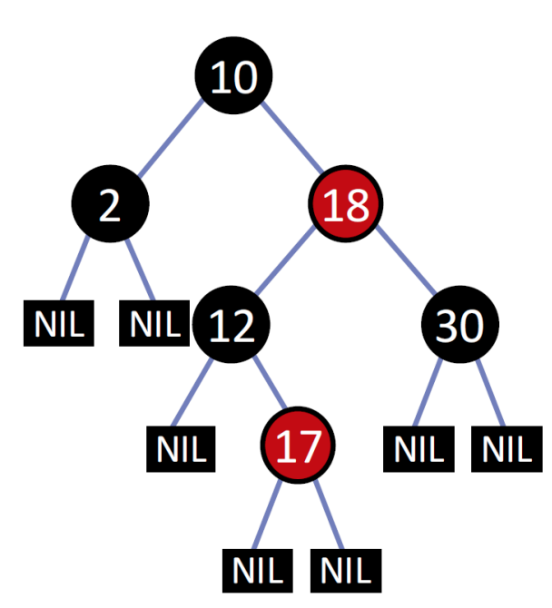
Binaire zoekboom, waarvoor geldt:
Elke knoop is rood of zwart
De wortel is zwart
Elke virtuele knoop (NIL) is zwart
Elke rode knoop heeft 2 zwarte kinderen
Elk pad van een knoop naar een virtuele knoop in zijn deelboom bevat eenzelfde aantal zwarte knopen
- De knoop zelf wordt niet meegerekend en de (zwarte) virtuele knoop wel
We definiëren het begrip zwarte hoogte als het aantal zwarte knopen op het pad naar een bladnode.
Aantal interne knopen
[bewijs]
We willen bewijzen dat een red-black tree met wortel
Hoogte 0
Een boom met hoogte 0 heeft enkel een virtuele (wortel)knoop. Vullen we dit in in de formule
Hoogte 1
De boom met hoogte 1 heeft een zwarte wortel met 2 virtuele kindknopen.
De formule houdt dus stand voor hoogte 0 en hoogte 1.
Hoogte h
We veronderstellen nu dat de formule klopt voor hoogte
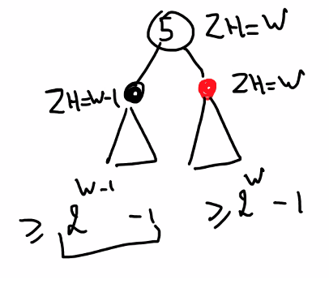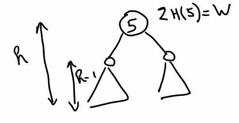
- Zwarte hoogte
- Zwarte hoogte
Het aantal knopen in de boom is de wortel plus de som van het aantal knopen in zijn linker en rechter deelbomen. Het aantal kindknopen in eender welke van de twee deelbomen is minstens
Hoogte
We willen bewijzen dat de hoogte van een red-black tree
- Een rode knoop heeft altijd 2 zwarte kinderen
- Minstens de helft van de knopen op het pad tussen de wortel en een virtuele knoop is zwart.
Nu gebruiken we de formule van het deel hiervoor:
De hoogte is dus
Zoeken
Zelfde als bij BST, we houden geen rekening met de kleur, dus
Toevoegen
We gaan dus altijd toevoegen als rode knoop. Omdat we dan de zwarte hoogte van de boom niet super hard verkloten. Het kan nu wel dat we dan twee rode knopen achter elkaar krijgen. Om dit op te lossen moeten we gaan roteren en recoloren om de boom terug geldig te krijgen. Roteren doe je zo:
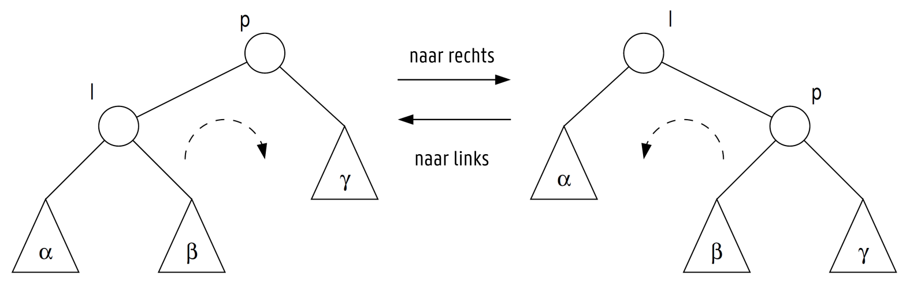
We roteren het kind naar bover zijn ouder, de deelboom van het kind wordt de deelboom van de voormalige ouder. De kost van één rotatie is
Een rode knoop mag dus geen rode kinderen hebben. Hoe lossen we dit op? Er zijn 3 mogelijke opties.
Rode oom
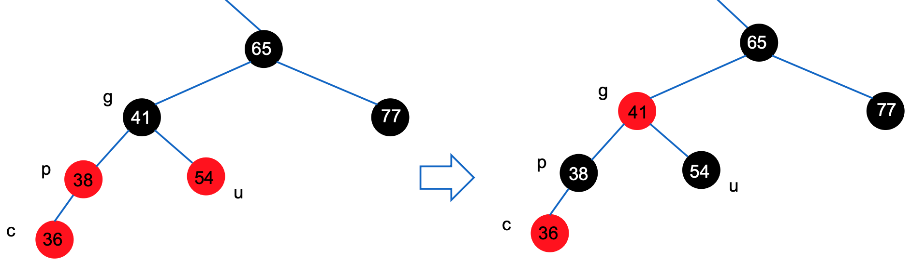
De knopen
Als de oom van
Zwarte oom, gealigneerd
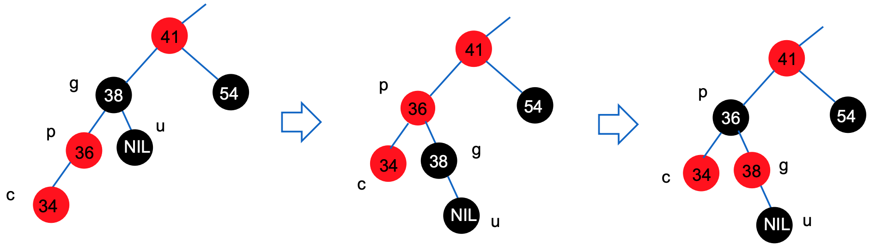
Als
Zwarte oom, niet gealigneerd
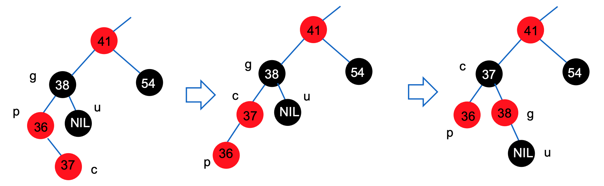
Als
Verwijderen
We verwijderen zoals we zouden verwijderen in een binaire zoekboom.
Dit kunnen we opsplitsen in 3 gevallen:
- De knoop heeft geen kinderen
- De knoop heeft 1 kind
- De knoop heeft 2 kinderen
De eerste en tweede zijn triviaal. Als de knoop geen kinderen heeft moet je niks doen. Als je knoop één kind heeft, laat je zijn ouder gewoon wijzen naar het kind. Als je knoop twee kinderen heeft, zal je zijn in-order voorloper moeten vinden. Deze heeft sowieso geen rechterkind, aangezien het zijn voorloper is. Overschrijf de inhoud van de te verwijderen knoop met de inhoud van zijn voorloper en verwijder de voorloper.
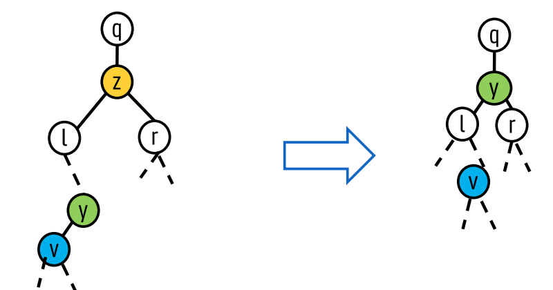
Red-black voorwaarden herstellen
We hebben nu mogelijks weer de voorwaarden van de boom naar de tering geholpen. We splitsen op in een paar gevallen.
Te verwijderen knoop is rood en heeft geen kinderen
- doe niks
Te verwijderen knoop is zwart
en heeft 1 rood kind.
- Maak rood kind zwart
en heeft geen kinderen
- we maken zijn virtuele kindknoop "dubbel zwart", dit moeten we later wegwerken
Om dubbel zwart weg te werken zijn er 8 mogelijke gevallen //TODO
2 - Meerdimensionale gegevensstructuren
Vaak hebben we nood aan meerdimensionale gegevens. Dit zijn gegevens die meer dan één sleutel bezitten. We modelleren deze gegevens typisch als een meerdimensionaal geometrisch probleem.
Projectie
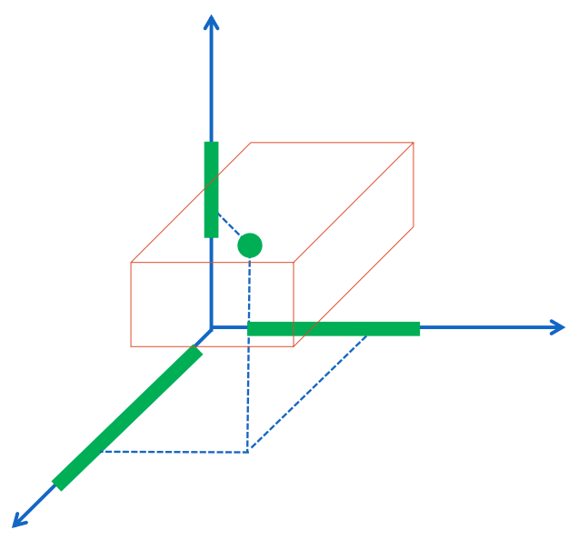
We houden per dimensie een gegevensstructuur bij waarin de punten gerangschikt zitten volgens deze dimensie. Willen we dan een range van gegevens opzoeken, stellen we dit voor als een hyperrechthoek (in de tekening een balk, in 2 dimensies zou het een gewone rechthoek zijn). We zoeken dan per dimensie alle gegevens die binnen de overeenkomstige zijde van de hyperrechthoek vallen. Dan overlopen we sequentieel de kleinste verzameling om te kijken welke punten binnen onze range zitten.
Als de punten gelijkmatig verdeeld zijn kunnen we opteren om slechts één dimensie in een gegevensstructuur te steken. Is dit niet het geval, zullen we toch voor elke dimensie een gegevensstructuur aan moeten maken.
//todo performantie? op zich is dit deel niet super belangrijk
Rasterstructuur
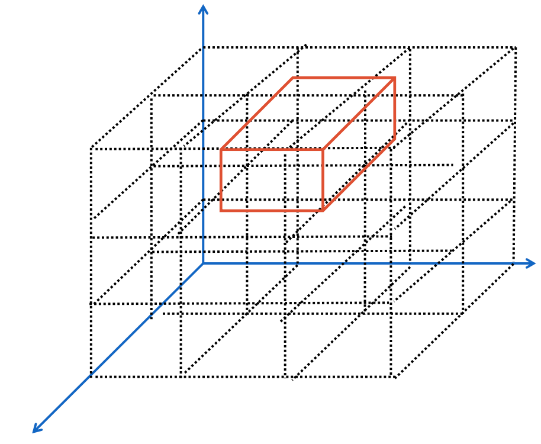
We kunnen onze verdelen in vakjes met behulp van een raster. We houden in elk vakje een gelinkte lijst bij van alle punten. Als we dan een range van punten willen vinden in een bepaalde zoekhyperrechthoek, vragen we alle gelinkte lijsten op van de vakjes die overlappen met het zoekgebied. Dan moeten we wel nog elk van die lijsten overlopen om de punten binnen het zoekgebied te vinden.
Je kan waarschijnlijk wel al ruiken dat een gegevensstructuur van deze aard enkel goed werkt indien de punten die hij bevat ietwat uniform verdeeld zijn. In het slechtste geval kunnen alle punten samengeklit in één rooster zitten, wat ook niet echt bevorderlijk zal werken voor de performantie.
De volgende gegevensstructuren trachten deze problemen op te lossen.
Quadtrees
Point Quadtrees
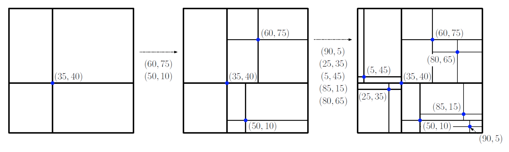
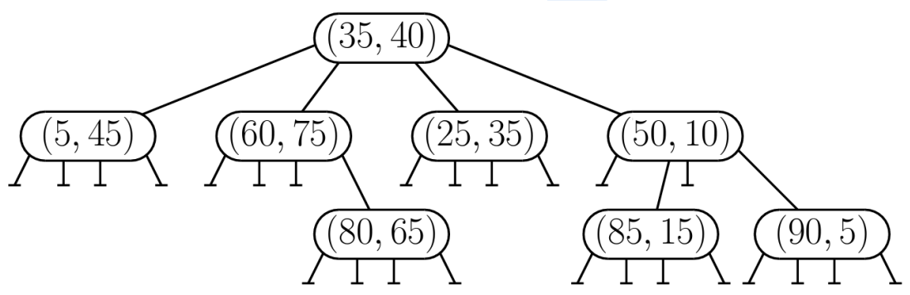
Elke toegevoegde knoop verdeelt het zoekgebied in vier (niet noodzakelijk gelijke) rechthoekige gebieden. Om te zoeken vertrekken we vanaf de wortel. Dan vergelijken we telkens ons zoekpunt met de vier kinderen en dalen af indien nodig. Als we dan een leeg gebied tegenkomen is het zoekpunt niet aanwezig in de boom.
De vorm van een Point Quadtree is afhankelijk van de toevoegvolgorde. Als elke toevoegvolgorde even waarschijnlijk is, zijn zoeken en toevoegen gemiddeld
Als de punten op voorhand gekend zijn kan je ervoor zorgen dat het evenwicht in de boom veel beter ligt. Als we alle punten rangschikken op x (bij gelijke x op y), vallen alle punten voor de mediaan in twee deelbomen. De punten erachter vallen dan in de andere twee deelbomen. Zo zal een deelboom nooit meer dan de helft van de punten van zijn ouder bevatten. Deze operatie is wel
Zoek je meerdere punten, doe dit dan recursief. Test bij een knoop of zijn punt in de zoekrechthoek ligt en ga vervolgens verder in de deelbomen die de rechthoek overlappen.
Point Region Quadtrees
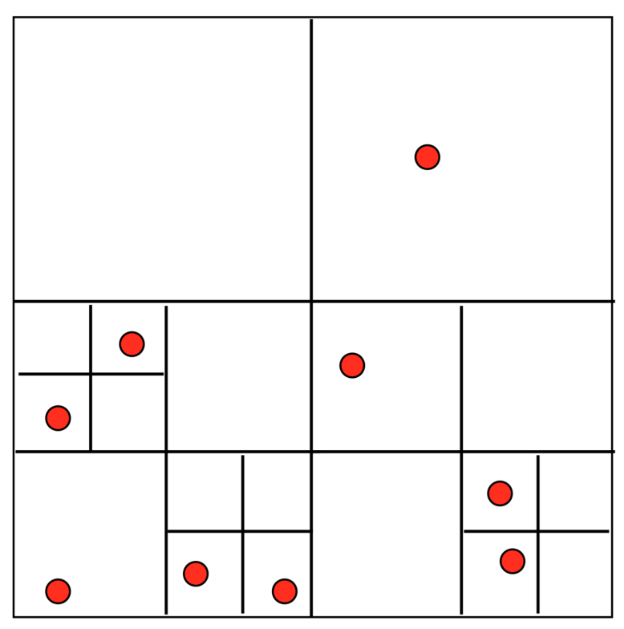
Het principe van een PR Quadtree is gelijkaardig aan dat van een gewone Quadtree, met het verschil dat elk gebied altijd in vier gelijke gebieden gesplitst zal worden. Als er een punt wordt toegevoegd zullen we dus telkens het gebied moeten splitsen totdat elk punt zijn eigen vakje heeft. Dit heeft als gevolg dat de structuur, evenals de hoogte van de boom onafhankelijk zijn van de toevoegvolgorde.
Hoogte
De hoogte van een PR Quadtree wordt bepaald door de kleinste afstand
[bewijs]
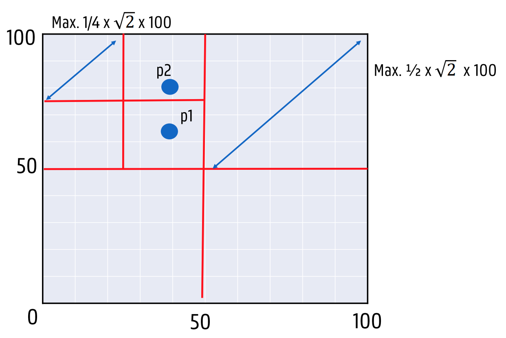
Neem
De maximale afstand tussen twee punten in dat gebied is gelijk aan de lengte van de diagonaal:
Deze afstand is groter dan of gelijk aan onze minimale afstand
De hoogte
Kleine opmerking, dit bewijs is voor een PR Quadtree met 2 dimensies. Voor
Range queries
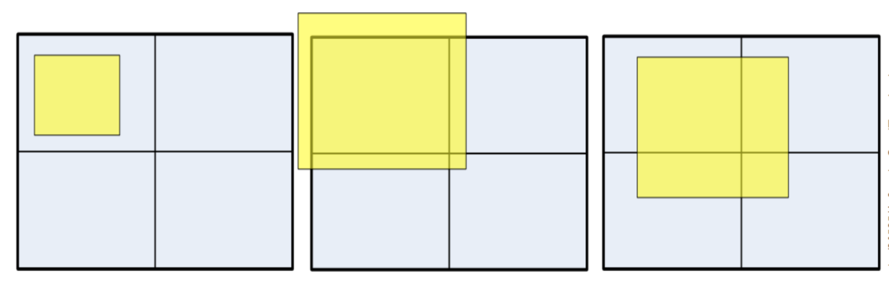
Om een range query te implementeren bij een PR-quadtree, vertrek je vanaf de bovenste knoop. Als de zoekrechthoek overlapt met de cel van de knoop, ga je recursief dieper. Als dit niet het geval is geef je een leeg resultaat terug. Bij een bladknoop kijk je of het individuele punt overlapt met de zoekrechthoek. Als dit het geval is geef je het punt terug.
Nadelen
Het grote nadeel aan beide eerder genoemde Quadtrees is dat bij meer dimensies, de hoeveelheid gebruikte pointers exponentieel zal toenemen. Elke node heeft voor
K-D Trees
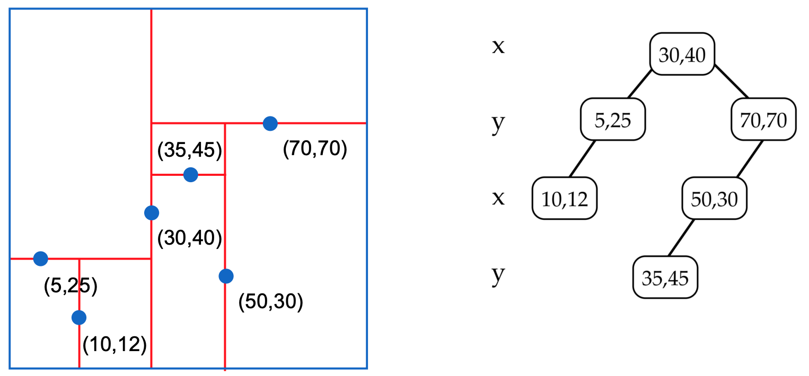
K-D Trees trachten de vertakkingsgraad te beperken door op elk niveau te splitsen volgens één dimensie. Bij het afdalen in de boom zullen we dan typisch alterneren tussen de verschillende dimensies.
Range search query
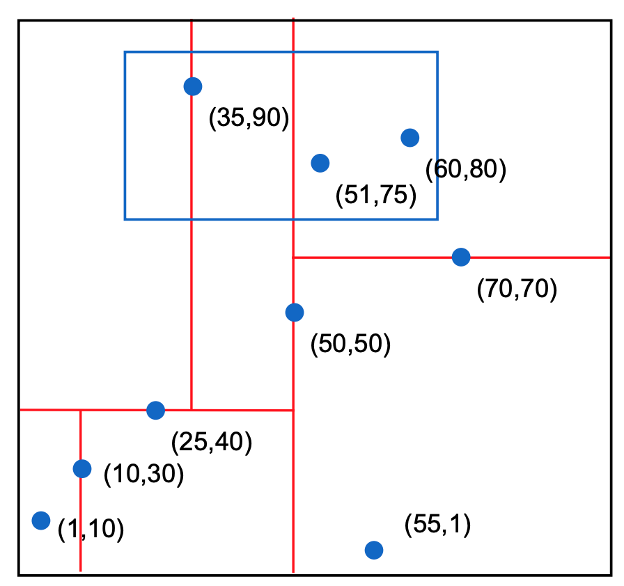
Je gaat weer recursief moeten werken per knoop. Als het punt van deze knoop binnen de zoekrechthoek valt, voeg je hem toe aan het resultaat. Als de zoekrechthoek (gedeeltelijk) overlapt met de cel van de knoop, ga je recursief dieper. Is dit niet het geval, geef je een leeg resultaat terug.
Nearest Neighbor
//TODO
3 - Analyse van iteratieve algoritmen
Orde van toename
Lussen
Enkele lus
int functie (vector<int>& v){ int result = 0; int n = v.size(); for (int i = 0; i < n; i++){ result += (i+1)*v[i]; } return result;}We loopen
Geneste lus
xxxxxxxxxxint functie(vector<int>& v){ int result = 0; int n = v.size(); for (int i = 0; i < n; i++){ for (int j = 0; j < n; j++){ result += v[j]; } } return result;}Deze code doet eigenlijk het zelfde als het vorige blokje code, maar minder efficiënt. We zetten onze code om in een sommatie:
Na wat coole wiskunde krijgen we:
Logaritmische uitvoeringstijd
Als je je teller bijvoorbeeld verdubbeld in plaats van incrementeert, krijg je een logaritmische uitvoeringstijd:
xxxxxxxxxxint functie(vector<int>& v){ int result = 0; int n = v.size(); for (int i = 0; i <= n; i*=2){ for (int j = 0; j < n; j++){ result += v[j]; } } return result;}Per iteratie van de buitenste lus, wordt de binnenste lus
De uitvoeringstijd bedraagt
Sorteeralgoritmes
Selection sort
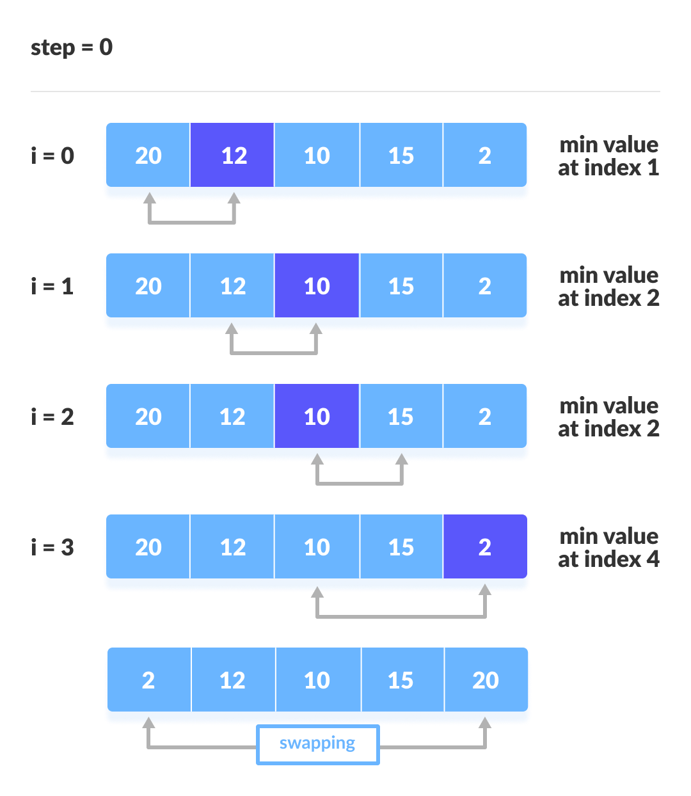
- Neem het kleinste element van de lijst en zet het vooraan
- Neem het kleinste element van de lijst behalve het eerste element en zet dat op de tweede plek
- Herhaal
- Winst (eigenlijk niet want het is
xxxxxxxxxxvoid selectionSort(int arr[], int n){ int i, j, min_idx; // One by one move boundary of // unsorted subarray for (i = 0; i < n-1; i++) { // Find the minimum element in // unsorted array min_idx = i; for (j = i+1; j < n; j++) if (arr[j] < arr[min_idx]) min_idx = j; // Swap the found minimum element // with the first element swap(&arr[min_idx], &arr[i]); }}
Insertion sort
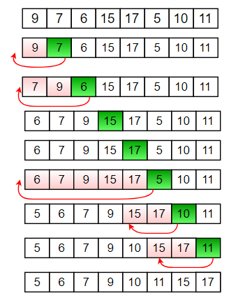
Je gaat eigenlijk de rij element per element af, het element dat je tegenkomt blijf je naar links schuiven zolang het kleiner is dan het element aan zijn linkerkant. Je krijgt dus in elke stap links van het groene blokje en telkens groter wordende gesorteerde deelrij.
xxxxxxxxxxvoid insertionSort(int arr[], int n){ int i, key, j; for (i = 1; i < n; i++) { key = arr[i]; j = i - 1; // Move elements of arr[0..i-1], that are greater than key, to one position ahead of their // current position while (j >= 0 && arr[j] > key) { arr[j + 1] = arr[j]; j = j - 1; } arr[j + 1] = key; }}Belangrijk om te weten bij insertion sort, is dat het vrij goed werkt op een tabel die al redelijk goed in volgorde staat.
Efficiëntie
[bewijs]
- Buitenste lus wordt
- Het aantal iteraties van de binnenste lus hangt af van de invoer. We gaan dus onderscheid maken tussen het beste, slechtste en gemiddelde geval.
Als we twee elementen
Slechtste geval
De rij staat achterstevoren, elk paar elementen vormt een inversie. Dit zijn er
Beste geval
De tabel staat in volgorde en er zijn geen inversies. We moeten de tabel dus maar één keer
Gemiddeld geval
We veronderstellen dat elke permutatie van de elementen even waarschijnlijk is. Dan bekomen we
Goed, dit is eigenlijk niet zo belangrijk. Wat insertion sort zo nuttig maakt, is dat zolang het aantal inversies
Sentinel
Een andere manier om insertion sort een klein beetje sneller is door een sentinel (poortwachter) te selecteren. Dit is het kleinste element van de tabel. Door dit element al direct vooraan te zetten, kunnen we de conditie
Stappenplan
- Definieer een maat voor de invoergrootte
- Definieer je kostenmodel: welke basisoperaties?
- Bepaal of uitvoeringstijd afhankelijk is van waarde van de invoer
- Stel een sommatie op die uitdrukt hoe vaak de basisoperatie wordt uitgevoerd
- Werk deze sommatie uit tot een gesloten uitdrukking, of schat af in asymptotische notatie
4 - Analyse van recursieve algoritmen
Iteratieve methode
xxxxxxxxxxint factorial(int n){ // basisgeval if (n == 0) return 1; //recursie else return n*factorial(n–1);}Het aantal vermenigvuldigingen
We gebruiken backwards substitution om deze om te vormen naar een gesloten uitdrukking:
Onze factorial() is dus
Recursieboom
Beschouw het volgende algoritme:
xxxxxxxxxxint somBinaireRecursie (const vector<T>&v, int start, int stop){ if (start >= stop) //basisgeval: lege rij return 0; if (start == (stop – 1)) //basisgeval: 1 element return v[start]; int mid =start +( stop-start)/2; return somBinaireRecursie(v, start, mid) + somBinaireRecursie(v, mid, stop );}We zullen hiervan is een recursieboom maken. We beginnen met het opstellen van een betrekking voor de uitvoeringstijd met als basisoperatie de optelling op de laatste lijn:
We negeren de floor en ceil en verkrijgen:
Nu kunnen we een boom maken.

We moeten we wel nog weten hoe diep hij is. Op elk niveau verdubbelt het aantal elementen in de boom. Als we dus
Met
In het slechtste geval is de boom volledig gevuld en kunnen we dus stellen dat
Master theorema
Oké, we gaan dit even drastisch versimpelen. Het kadertje hieronder vertelt ons eigenlijk hoe het werk in onze boom verdeeld wordt. Je moet de term
- Onze
- Het werk is gelijk verdeeld

Als je dus een recurrente betrekking kan opstellen van je algoritme, kan je d.m.v. dit kadertje een afschatting maken voor de onder- en bovengrens van zijn tijdscomplexiteit.
Afschattingen van recursiebetrekkingen
Godverdomme we moeten die deel niet kennen, dus sla het maar over
Logaritmische afschatting
Machten van
Afschattingen met sommen
//TODO laat maar zitten
5 - Decrease-and-conquer
Verminderen met een constante term
Verminderen met een constante factor
Verminderen met een variabele factor
Verminderen met een constante term
Als je insertion sort recursief implementeert doet hij precies dit.
Verminderen met een constante factor
//TODO varianten op binair zoeken
Verminderen met een variabele factor
Quickselect
Ik heb niet echt zin meer om neer te schrijven hoe quickselect nu precies werkt. We zullen het enkel hebben over de performantie.
Beste geval
Geen recursieve oproep, dus er zijn maar
Slechtste geval
Als de pivot bij elke recursieve oproep het grootste of het kleinste element is, wordt de oproep telkens gedaan op
In het slechtste geval zal het
Gemiddeld geval
Het gemiddeld geval is iets moeilijker. We veronderstellen de de pivot random wordt gekozen.
Die twee sommen hier stellen eigenlijk alle mogelijke posities
Pivot
//TODO
6 - Divide-and-conquer en algemene sorteermethodes
Divide-and-conquer
Als we een algoritme maken volgens het principe van divide-and-conquer, verdelen we het probleem in meerdere onafhankelijke deelproblemen. Deze zijn allemaal kleinere instanties van het originele probleem. Meestal wordt elk deelprobleem dan gedelegeerd door middel van een recursieve oproep, totdat het probleem zo klein is dat we bij het basisgeval terecht komen. We combineren dan de oplossingen van de deelproblemen tot een oplossing voor ons origineel probleem.
Algoritme van Strassen
Niemand houdt van matrices. Strassen is een simp want zijn algoritme is nieteens goed volgens Simoens.
//TODO je moet het niet vanbuiten kennen volgens onze meneer
Algemene sorteermethodes
We beginnen dit hoofdstuk met enkele andere aspecten van sorteren waarmee we rekening willen houden:
Geheugengebruik
- We willen weten hoeveel extra geheugen een sorteermethode nodig heeft. Als de hoeveelheid extra geheugen niet afhankelijk is van het aantal elementen, spreken we van ter plaatse rangschikken.
Stabiliteit
- Als het de volgorde van gegevens met dezelfde sleutels niet verandert, noemen we ons algoritme stabiel. Als we bijvoorbeeld een lijst van personen die op naam gesorteerd staat, op leeftijd gaan sorteren, is ons algoritme stabiel als na deze operatie de personen per leeftijd nog steeds alfabetisch gerangschikt staan.
Shellsort
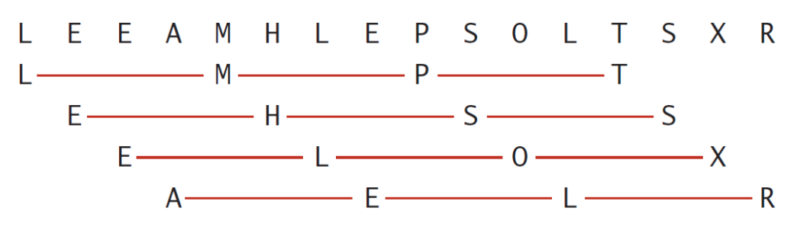
Shellsort is simpel. We gaan een rij
Shellsort rangschikt ter plaatse, maar is niet stabiel. Dit komt door het rangschikken van de verschillende deelreeksen. De complexiteit hangt af van de gekozen incrementreeks (dus welke
Heapsort
Neem bijvoorbeeld de reeks: 5 2 7 9 4 7
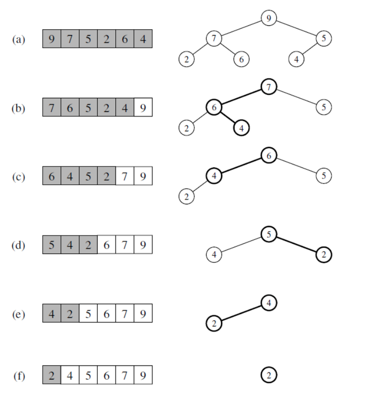
Wat als we nu van onze data een heap maken en hier gewoon telkens het grootste element uit halen? Dat is Heapsort. Een rij omvormen in een heap kost
Performantie
[bewijs]
We transformeren onze rij tot een max-heap. Dit kan in
Dit doen we
Een heap met
- De initiële heap maken:
- De berekening hierboven:
- Totaal:
Mergesort
| Voor | Na |
|---|---|
| 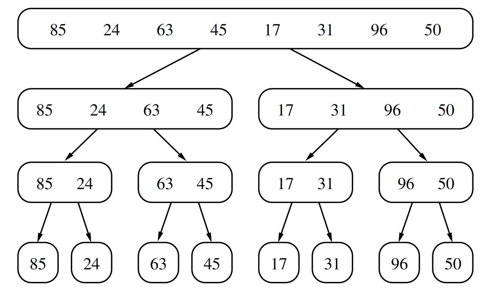 | 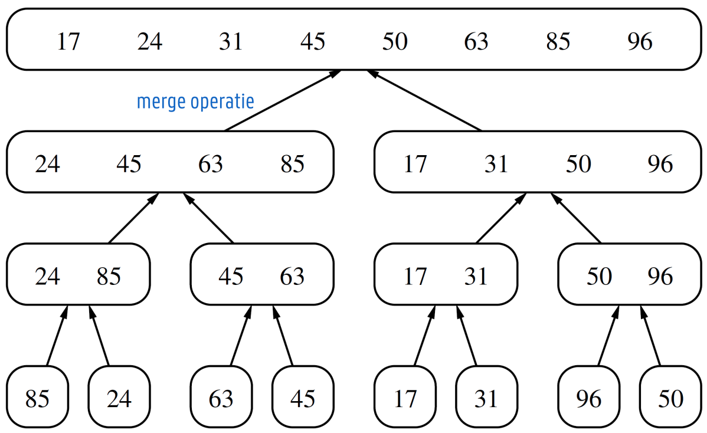 |
Mergesort is een perfect voorbeeld van divide-and-conquer. We verdelen telkens de tabel in twee helften en sorteren elke helft apart. Op het laagste niveau bevat elke deeltabel maar één element, en is dus al gesorteerd. We moeten dus enkel weten hoe we twee reeds gesorteerde rijen moeten samenvoegen, vandaar de naam mergesort.
Samenvoegen van twee gerangschikte tabellen kan heel gemakkelijk. Je vergelijkt van beide tabellen het eerste element en je neemt telkens de kleinste. Hiervoor heb je dus wel extra geheugen nodig, want je moet dat element wel ergens kunnen steken. Kopieer dus één van de twee deeltabellen naar een hulptabel. Als we bij elke samenvoeging bij de linkse deeltabel beginnen, behouden we de volgorde van gelijke sleutels en is het algoritme bijgevolg stabiel. Door het extra geheugengebruik rangschikt het wel niet ter plaatse.
Efficientie [bewijs]
Elke recursieve oproep splitst de rij in twee. Om deze twee samen te voegen hebben we in het slechtste geval
Bottom-up implementatie
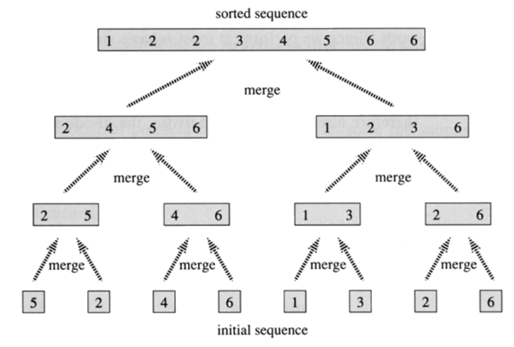
Je kan mergesort nog een beetje optimaliseren door in plaats van recursief te dalen, gewoon direct te beginnen bij deelrijen met lengte 1. Deze ga je dan stap voor stap mergen tot grotere rijen. Zo vermijd je de overhead van recursieve oproepen. De efficiëntie is nog steeds
Optimalisaties
Als je een retard beta cuck bent maak je voor elke merge operatie een nieuwe hulptabel aan. Als je een alpha chad bent weet je dat je eigenlijk maar één extra tabel met grootte
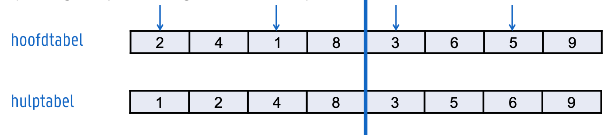
Je gaat nu gewoon de deelrijen (lengte 2 in het voorbeeld) in de hoofdtabel mergen in de hulptabel waardoor je hem overschrijft. In de volgende stap gebruik je de hulptabel als nieuwe hoofdtabel.
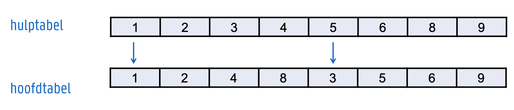
Je kan ook nog een kleine optimalisatie doen door te starten met deeltabellen groter dan één element, en deze al te sorteren met insertion sort.
Quicksort

Om Quicksort even kort samen te vatten zal ik even beginnen met een oversimplificatie, zonder optimalisaties.
- Neem het eerste element (we noemen dit de pivot)
- Zet alle elementen kleiner dan dat element links ervan
- Zet alle elementen groter dan dat element rechts ervan
- Ga recursief verder in het linkse en rechtse deel
- Herhaal tot je aan een deelrij van één element komt. Nu is je hele rij gesorteerd
Wat moeten we nu doen om ervoor te zorgen dat de elementen kleiner dan de pivot links staat? En zodat de grotere elementen rechts staan? We hebben in één van de vorige hoofdstukken al Lomuto partitionering besproken. Dit is zeker een mogelijkheid, maar er bestaat een betere methode.
Partitiemethode van Hoare
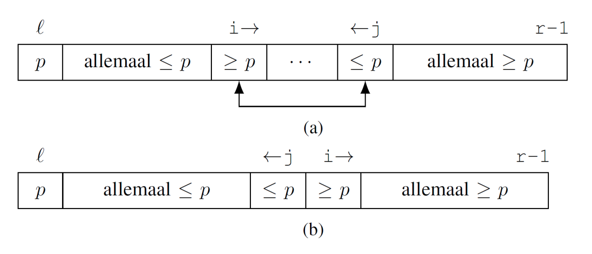
We nemen weer ter illustratie het eerste element van de rij als pivot.
- Laat
- Schuif
- Schuif
- Swap nu de elementen op plaats
- Ga verder totdat
Quicksort
Als we deze partitionering nu telkens opnieuw uitvoeren op de deelrijen links en rechts van de pivot, zal uiteindelijk onze rij gesorteerd zijn.
xxxxxxxxxxvoid quicksort (vector<T>&v, int l, int r){ // Rangschikt de deelvector v[l..r-1] if (l<r-1){ // Partitie met v[l] als spilelement T pivot = v[l]; //Geen T&, geen move! int i = l, j = r-1 while (v[j]>pivot) j--; while (i<j){ swap(v[i],v[j]); i++; while (v[i]<pivot) i++; j--; while (v[j]>pivot) j--; } // Recursief rangschikken van beide delen quicksort (v, l, j+1); quicksort (v, j+1, r); }}void quicksort (vector<T>&v){ quicksort(v, 0, v.size());}Quicksort sorteert ter plaatste, maar is niet stabiel. Je moet ook oppassen, want de recursieve oproepen kunnen veel ruimte op de stapel innemen.
Efficiëntie
[bewijs]
Beste geval
De deelrijen zijn altijd even groot:
Dit is dezelfde betrekking als bij Mergesort en dus
Slechtste geval
Dan bestaat één van de twee deeltabellen telkens uit één element. Dus:
De uitvoeringstijd is dus de som van al die dingen:
dus
Random keuze van de pivot
//TODO
Varianten
Cut-off
We kunnen de recursie stoppen als de deeltabel kleiner is geworden dan een bepaalde cut-off waarde. Dan zou je oftewel deze kleine deeltabellen ieder sorteren met insertion sort, oftewel insertion soort in één keer de hele tabel laten sorteren. Dit zal zeer efficiënt uitvallen aangezien het aantal inversies laag is.
Mediaan-van-drie
Neem het eerste, middelste en het laatste element van de lijst. Sorteer deze 3 ter plaatse. De grootste en de kleinste kunnen als stopelementen dienen, de middelgrootste gebruik je als pivot. We houden deze apart door hem op de voorlaatste plaats in de rij te zetten. Voor de recursieve oproep zetten we de pivot dan nog op zijn definitieve plaats door te swappen. Deze optimalisatie blijkt in de praktijk 5% sneller dan de pivot random kiezen.
3-way partitioning
We verdelen de tabel in drie partities.
- Elementen kleiner dan de pivot
- Elementen gelijk aan de pivot
- Elementen groter dan de pivot
Hierdoor kunnen lijsten met veel duplicaten sneller gesorteerd worden, omdat we dan in de volgende recursieve oproep de elementen in het midden niet meenemen. Voor willekeurige tabellen is de uitvoeringstijd nog steeds
Dual pivot sort
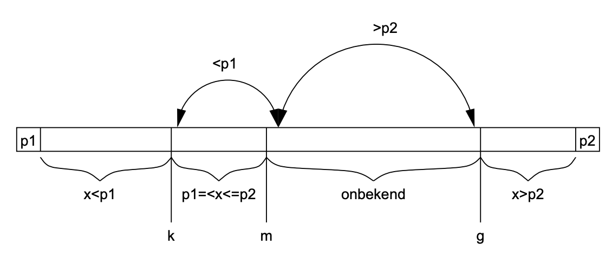
We gebruiken 2 pivots, waardoor de rij in 4 stukken wordt opgedeeld. Nu is het partitioneren natuurlijk iets ingewikkelder, dus ik ga mijn tijd toch even gebruiken om iets anders te doen.
Dit algoritme blijkt 10% sneller dan gewone Quicksort, als je bij rijen van minder dan 47 elementen insertion sort gebruikt.
7 - Lineaire sorteermethodes
Efficiëntie van rangschikken
[bewijs]
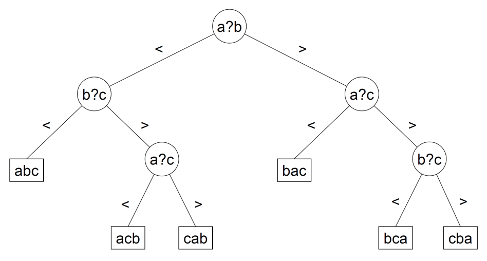
We willen een informatietheoretische ondergrens bepalen voor eender welk sorteeralgoritme op basis van sleutelvergelijkingen. Als we nu bijvoorbeeld een lijst hebben met drie waardes (a, b en c), kunnen we alle mogelijke sequenties van vergelijkingen die een sorteeralgoritme zou uitvoeren in de vorm van een beslissingsboom voorstellen. Elke inwendige knoop is een sleutelvergelijking tussen twee elementen. Elke bladknoop is een mogelijke uitkomst van het algoritme. De bladeren van deze boom bevatten dus alle mogelijke permutaties van indices onze invoerrij. Dit zijn er minstens
Hoe veel sleutelvergelijkingen heeft een sorteeralgoritme nu nodig in het slechtste geval? En in het gemiddelde geval? We zoeken voor beiden een ondergrens.
Slechtste geval
Het slechtste geval is de langste afstand van de wortel naar een blad, dit is per definitie de hoogte van de boom. Om een ondergrens te vinden zoeken we de minimale hoogte van een boom met
Gemiddeld geval
We zoeken in onze beslissingsboom de gemiddelde lengte van de wortel naar een blad. Hiervoor zoeken we eerst de som van al de weglengtes naar de bladeren. Dit is de uitwendige weglengte.
We bewijzen dat de uitwendige weglengte
Voor
De wortel heeft twee deelbomen met
Omdat
We kunnen de kleinst mogelijke waarde vinden door deze uitdrukking af te leiden en zijn nulpunt te zoeken (ja ik heb dit uitgewerkt want het stoorde mij):
En dus is
Counting sort
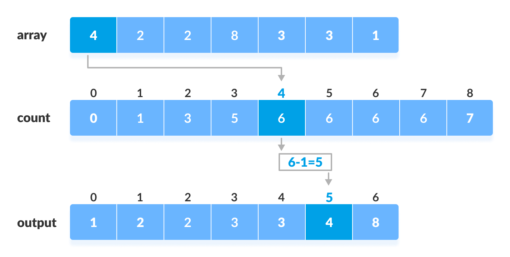
Counting sort is zeer nuttig om een tabel te sorteren met waarden die binnen een niet al te groot interval vallen, met veel duplicaten. Eerst en vooral hebben we het maximum en minimum van de lijst nodig. Die kunnen we vinden met Quickselect Dan doen we de volgende stappen:
Maak een frequentietabel van alle waarden, de index van deze tabel komt overeen met de waarde in de originele tabel
Maak hiervan een cumulatieve frequentietabel (door te overlopen en op te tellen)
- Elke waarde in de frequentietabel komt nu overeen met de hoogste index (in de originele tabel) van de waarde op deze index in de frequentietabel
Maak een nieuwe tabel voor je uitkomst
Nu overloop je de originele tabel van rechts naar links en voor elk element
- Ga naar de index
- Zet
- Decrementeer frequentietabel[x]
- Ga naar de index
Zo ga je door tot je aan het eerste element van de originele tabel zit
Dit lijkt een beetje omslachtig, maar deze extra stappen zijn nodig zodat het algoritme stabiel is, omdat we vaak te maken zullen hebben met duplicaten. Spijtig genoeg rangschikt het algoritme door de extra tabellen niet ter plaatse.
Als we
Radix sort

Radix sorteert een rij door elke sleutel op te splitsen in afzonderlijke elementen. Zo kan je een getal in cijfers opsplitsen of een string in letters. Elk afzonderlijk element wordt dan gezien als een getal in een talstelsel met een bepaalde radix (bv 26 bij letters). We kunne onze rij nu dus sorteren per afzonderlijk element. Dit doen we met counting sort. Ik zal iets dieper ingaan op de details in de volgende paragrafen.
LSD Radix sort
We beginnen bij de meest rechtse (de least significant digit) en sorteren de rij op basis van dit 'getal'. Wanneer dit gedaan is gaan we eentje hoger. Enzovoort enzoverder.
Met radix
MSD Radix sort
We sorteren de rij op basis van het grootste 'getal'. Dan sorteren we recursief alle deelrijen die beginnen met hetzelfde getal op basis van het tweede grootste getal. Dit doen we natuurlijk altijd met counting sort.
Complexiteit
//TODO
Bucket sort

We veronderstellen dat de sleutels reële getallen zijn, die binnen een bepaald interval mooi uniform verdeeld zijn. We gaan ons interval in
8 - Dynamisch programmeren
Je moet van alle geziene problemen de recursieve betrekking kunnen opstellen.
Dynamisch programmeren is eigenlijk een upgrade van divide-and-conquer. We splitsen problemen op in kleinere overlappende deelproblemen. Als we een deelprobleem hebben opgelost, slaan we op de één of andere manier het resultaat op, zodat we in de andere deelproblemen gebruik kunnen maken van dit resultaat. Dit noemt men memoisatie. We ruilen dus geheugen voor uitvoeringstijd.
Stel dat we een een algoritme willen schrijven om het
Als we nu geen big brain programmeerstrategieën zouden hebben, zouden we dit algoritme recursief kunnen implementeren. Dan laat je bijvoorbeeld het algorime twee recursieve oproepen doen om telkens de vorige twee Fibonaccigetallen te berekenen. Dit is natuurlijk vrij achterlijk, aangezien super veel getallen meerdere keren gaan berekenen. Kijk maar naar het plaatje.
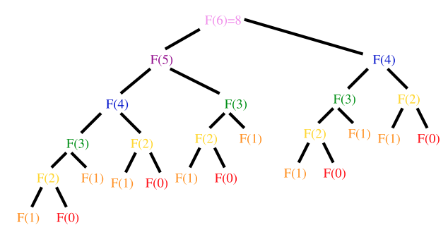
Om dit algoritme te verbeteren met dynamisch programmeren, kunnen we dit op twee manieren aanpakken:
Top-down
- We vertrekken vanuit de wortel van onze recursieboom en kijken welke deelproblemen moeten worden opgelost, zodat we geen onnodige problemen oplossen. We houden ook een memoruimte bij zodat we éénzelfde probleem geen twee keer op moeten lossen.
- We beginnen bij het grootste getal en werken zo nog steeds naar beneden, maar nu slaan we de deelresultaten
Bottom-up
- We berekenen alle deeloplossing in een bepaalde volgorde zodat als we bij een bepaald deelprobleem komen, alle onderliggende deelproblemen zijn opgelost. We gaan dus eigenlijk omhoog in een boom.
- Hier beginnen we onderaan. Elke keer dat we een nieuw getal berekenen houden we de vorige twee getallen bij. Deze implementatie is natuurlijk de meest efficiënte. Dat is ook meestal het geval voor een bottom-up implementatie.
Stappenplan
- Karakterisatievan de oplossing
- Opstellen recursieve betrekking
- Bepaal waarde van de optimale oplossing
- Bepaal structuur van de optimale oplossing
Ik denk dat het bij dit hoofdstuk vooral belangrijk is dat je oefeningen maakt. Ik heb een aantal oefeningen van dit hoofdstuk uitgeschreven in C++ met wat tests. https://github.com/martijnmeeldijk/martijn_oef
Toepassingen
[bewijs]?
Optimale binaire zoekboom
Stel je voor. We hebben een reeks sleutels die op oplopende volgorde zijn gesorteerd. We hebben ook een tabel met een bepaalde reeks sleutels, met voor elke sleutel een zoekfrequentie. Hoe kunnen we nu een binaire boom opstellen die de totale zoektijd voor deze reeks sleutels minimaliseert?
We hebben dus:
Een oplopende reeks sleutels:
Zoekfrequentie
Zoekfrequenties
- deze liggen ieder in een interval tussen twee sleutels (of op één van de uiteindes):
- deze liggen ieder in een interval tussen twee sleutels (of op één van de uiteindes):
We zoeken naar een boomstructuur die de volgende uitdrukking minimaliseert:
Dit is dus de som van alle lengtes van de zoekpaden naar aanwezige en afwezige sleutels.
//TODO
Longest common subsequence
Neem twee strings. Wat is de langst opeenvolgende sequentie letters die in beide strings voorkomt? Je mag deze sequentie bekomen door uit elke string een aantal letters weg te halen.
We passen het stappenplan toe:
Karakterisatie van de oplossing
On probleem heeft een optimale deelstructuur. Een optimale oplossing maakt gebruik van optimale oplossingen voor deelproblemen. Beschouw de volgende sequenties.
xxxxxxxxxxLCS('CGTATGC', 'CTGAC') = LCS('CGTATG', 'CTGA') + 'C'LCS('CGTATG', 'CTGA') = max(LCS('CGTAT', 'CTGA'), LCS('CGTATG', 'CTG'))We kunnen onze LCS uitdrukken in functie van de LCS van de string met één letter minder.
Opstellen van een recursieve betrekking
We stellen de oplossing voor in een matrix
Waarde van de optimale oplossing
De waarden
Opbouw van de optimale oplossing
We willen niet alleen de lengte van de langste deelsequentie, maar ook de deelsequentie zelf berekenen. We moeten hiervoor een extra tabel bijhouden die onthoudt welke vorige waarde in
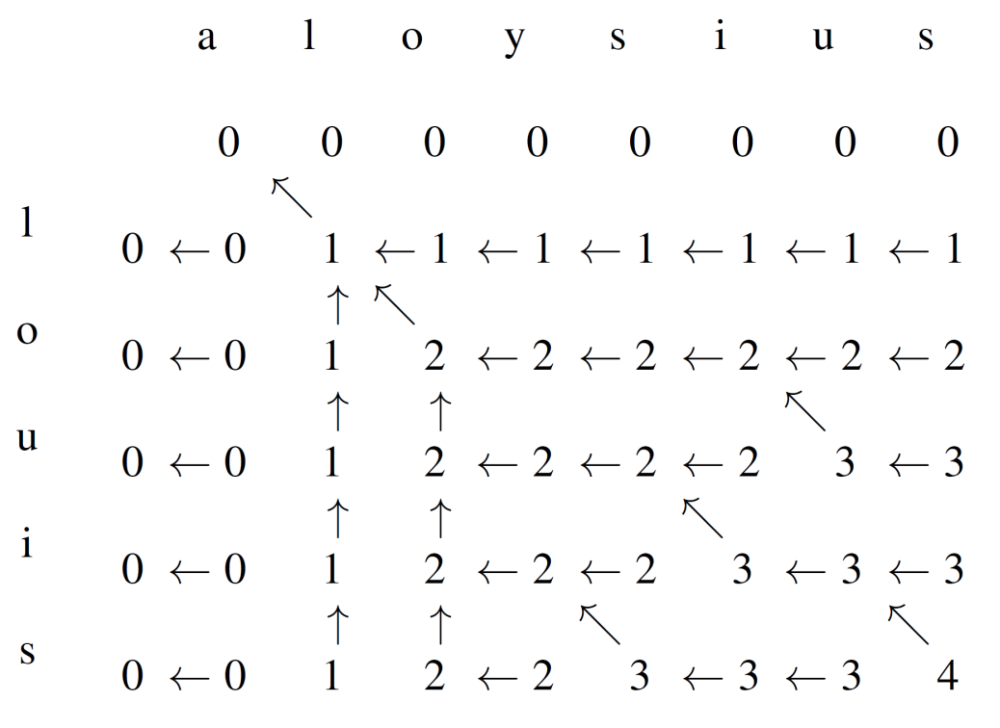
De matrix
9 - Backtracking
Combinatorische problemen
Bij combinatorische problemen zoeken we naar oplossingen die de vorm hebben van een combinatorisch object zoals een combinatie of een permutatie. Bij een combinatorisch optimalisatieprobleem zoeken we een geldige oplossing met een minimale of maximale waarde. Voor de meeste combinatorische problemen zijn nog geen efficiënte oplossingen gevonden. We moeten dus kandidaat-oplossingen uitproberen. Dit proces kunnen we versnellen dankzij backtracking.
Backtracking
Met backtracking gaan we onze oplossing incrementeel opbouwen. Het is belangrijk dat we het dan zo snel mogelijk ontdekken als we ons op een dood spoor bevinden. Als dit het geval is keren we terug op onze stappen. Beschouw het
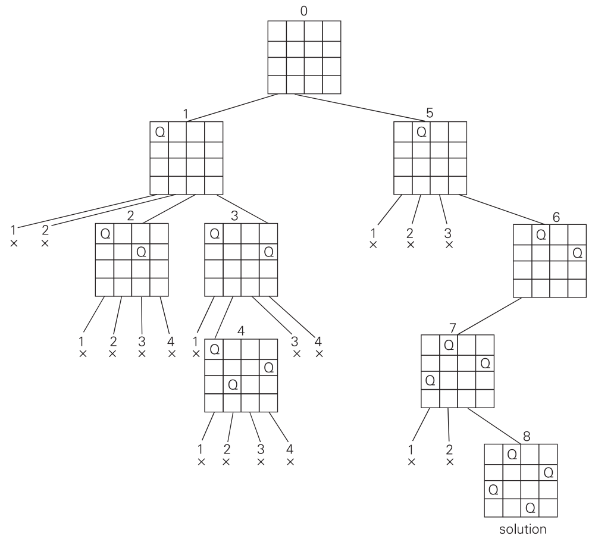
Als we op een ongeldige oplossing komen (een x), keren we één stap terug. Als we vast komen te zitten gaan we terug naar boven en proberen we daar verder. Dat is backtracking in een notendop. Als we nu helemaal sicko mode willen gaan en ons algoritme sneller willen maken, zullen we moeten snoeien.
Snoeien
Omdat de grootte van onze boom vreselijk snel toeneemt, willen we het aantal knopen zo veel mogelijk beperken. We moeten onze boom dus snoeien. Hier zijn een aantal verschillende technieken voor:
- Variabelen ordenen: we kunnen het aantal knopen beperken door de volgorde waarin variabelen worden toegevoegd te wijzigen. Als je een sudoku wilt oplossen kan je bijvoorbeeld beginnen bij het vakje waar zo weinig mogelijk verschillende cijfers in mogen.
- Waarden ordenen: we kunnen de volgorde waarin de mogelijke waarden van een variabele worden uitgeprobeerd veranderen. Dit heeft geen invloed op de grootte van de boom, maar wel op de volgorde dat hij wordt overlopen. Je begint best met een waarde die zo veel mogelijk opties open houdt.
- Vooruit testen: wanneer je een waarde toekent aan een variabele, kijk je of er ten minste één mogelijke waarde overblijft voor alle resterende variabelen. Als dit niet het geval is, ga je meteen naar de volgende waarde.
- Symmetrieën: deelbomen die dezelfde oplossingen leveren die we al gevonden hebben, kunnen we weglaten.
- Branch-and-bound: Als je een voorlopige deeloplossing hebt, maar weet dat de nog toe te wijzen variabelen onmogelijk tot een betere oplossing kunnen leiden dan de huidig beste oplossing, breek je de zoektocht af.
10 - Gulzige algoritmen en metaheuristieken
Gulzige algoritmen
Hoe leuk backtracking ook is, zal zelfs met de beste snoeitechnieken ons probleem nog steeds snel vreselijk groot worden. Dit komt doordat we alle geldige configuraties afgaan om zo de beste te vinden. Dit is gedoemd om te falen bij grote combinatorische problemen. We hebben heuristieken nodig.
Een heuristiek is basically een vuistregel om bij het zoeken naar een oplossing om te beslissen wat we moeten doen bij de volgende stap. Heuristieken garanderen niet altijd dat de beste oplossing, of zelfs een oplossing wordt gevonden. Ze helpen ons wel in de zoektocht ernaar.
Een gulzig (greedy) algoritme zal in elke stap kiezen voor de optie die op dat moment het best lijkt, zonder vooruit te denken. Dit geeft wonder boven wonder voor verbazend veel problemen de best mogelijke oplossing. En in andere gevallen een benaderende oplossing die vaak goed genoeg is.
Bij het wisselgeldprobleem (een bedrag betalen met zo min mogelijk biljetten en muntstukken) geeft een greedy algoritme altijd de beste oplossing. In dit geval zou je dan beginnen met telkens de hoogste munt of biljet die past in je bedrag en telkens weer de grootst mogelijke selecteren tot je het volledige bedrag hebt.
Bij een GPS komt een greedy algoritme best wel van pas, maar ik vind dit voorbeeld in de cursus eigenlijk niet zo goed dus ik ga het achterwege laten. We zullen verder gaan met wat problemen waarvoor we kunnen aantonen dat de greedy oplossing ook de beste oplossing is.
Gemiddelde eindtijd van processortaken
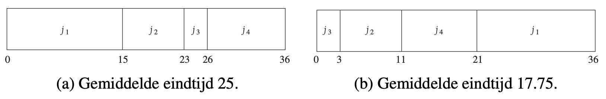
We hebben een processor en een bepaalde reeks taken die de processor moet uitvoeren. Elke taak heeft een bepaalde uitvoeringstijd. We willen natuurlijk dat er zo snel mogelijk zo veel mogelijk taken uitgevoerd worden, oftewel de gemiddelde eindtijd van de taken minimaliseren. De rechtse figuur toont een optimale oplossing.
Toevallig is hier de greedy methode ook de beste. We nemen gewoon de kortste taak, de tweede kortste, ... Heel leuk, maar we moeten ook nog bewijzen dat dit klopt.
Bewijs
Veronderstel dat je een optimale planning hebt in de volgorde:
- De eerste taak eindigt op:
- De tweede op
- De derde op
De som van al deze eindtijden is dan:
De clue is dat we hier vertrekken van de optimale oplossing. We nemen twee taken die uitgevoerd worden als
Dit betekent dat in een ideale oplossing, de taken niet in afnemende volgorde van uitvoertijd mogen staan. Hiermee bewijzen we dus dat ze in toenemende volgorde moeten staan.
Plannen van activiteiten
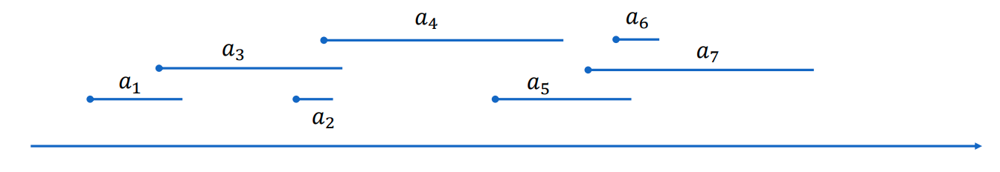
We hebben een feestzaal en we willen zo veel mogelijk feestjes geven. Elk feestje heeft een bepaalde duur, maar ze mogen niet overlappen. De 'gulzige' manier van oplossen in dit geval is door telkens het feestje met de vroegste eindtijd te nemen dat niet overlapt met het vorige gekozen feestje.
We zullen even alles met cool wiskundige tekens voorstellen:
Elke activiteit heeft:
- Een starttijd:
- Een eindtijd:
- Deze vormen een halfopen interval:
- De intervallen van twee activiteiten mogen dus niet overlappen als we ze willen inplannen.
- Een starttijd:
Bewijs
Om het bewijs op te stellen moeten we nog een paar extra dingen invoeren:
- de deelverzameling van activiteiten die pas beginnen als
- We nemen een activiteit
- de deelverzameling van activiteiten die pas beginnen als
- We nemen een activiteit
- We nemen een activiteit
Als
Als
Neem
- In symbolen:
- Hierdoor zijn alle elementen in
- In symbolen:
Knapsack problem
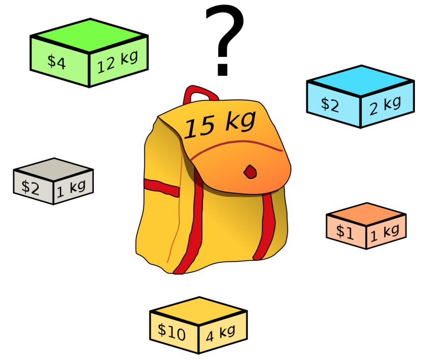
We hebben een rugzak die een bepaald aantal kilo's aan rommel kan dragen en een verzameling van rommel. Elk stuk rommel heeft een bepaalde prijs. Kunnen we nu een algoritme bedenken dat de ideale combinatie bepaalt van rommel zodat de totale hoeveelheid rommel in onze rugzak zo veel mogelijk waard is?
Kort antwoord: nee
Iets langer antwoord: Het knapsack probleem is NP-compleet, dus je kan zo ver we weten geen algoritme bedenken dat in polynomiale tijd eender welke rugzak kan vullen met de meest waardevolle combinatie van rommel. Er zijn wel heuristieken die de oplossing kunnen benaderen. Zo kunnen we bijvoorbeeld een gulzig algoritme schrijven dat telkens kiest voor het object met de grootste
Metaheuristieken
Er zijn een aantal strategieën, afgeleid uit vele probleemspecifieke heuristieken, die algemener toepasbaar blijken. Dit zijn de zogenaamde metaheuristieken. Deze strategieën zijn algemene recepten waar jij dan zelf nog de juiste ingrediënten voor moet kiezen. Chili con Carne
Ik heb zin in Chili con Carne. Maar er is geen Chili en ook geen con Carne dus ik ben genaaid.
Je gaat metaheuristieken meestal gebruiken voor optimalisatieproblemen. We zullen er enkele bespreken.
Lokaal zoeken
Begin van een willekeurige oplossing
Simulated Annealing
Simulated Annealing biedt een oplossing voor het probleem dat zich voordoet bij lokaal zoeken. We zorgen ervoor dat er een bepaalde kans is dat een slechtere oplossing aanvaardt wordt, in de hoop uit lokale extrema te kunnen ontsnappen en het globale maximum te vinden.
Stel je voor. We hebben een oplossing
Nu wordt het leuk. We willen ook dat we in het begin van het zoekproces vaak slechtere oplossingen uitproberen. Naarmate we verder zoeken, willen we die kans verkleinen. Deze kans moet als het ware afkoelen. Neem
Deze geeft dan altijd een waarde tussen
Genetische algoritmen
Ik veronderstel dat je al kunt raden van waar genetische algoritmen hun naam krijgen, dus dat zal ik even achterwege laten. Genetische algoritmen houden een populatie van kandidaatoplossingen bij. We gaan herhaaldelijk de populatie uitdunnen door de slechtste oplossingen dood te maken. Welke oplossingen moeten sterven, bepalen we met een bepaalde fitness functie. Dan maken we kruisingen tussen de overblijvende oplossingen, door bijvoorbeeld onderdelen te wisselen. We voegen wat willekeurige mutaties toe. Dit is ongeveer hetzelfde als een andere oplossing kiezen uit
Hoe je dit allemaal in de praktijk kunt toepassen is niet echt duidelijk. Hoe cool ze ook klinken, zijn genetische algoritmen vaak niet zo nuttig. Het wisselen van genen schaalt niet bepaald goed en we moeten voor elke oplossing een mogelijks kostelijke fitness functie evalueren.
11 - NP-Complete problemen
Zoals je misschien al weet, is het voor zo ver we weten niet mogelijk om alle problemen op te lossen in polynomiale uitvoeringstijd. De problemen waarvoor nog geen efficiënte oplossing bestaat en waarvoor we kunnen aantonen dat die niet bestaat, noemen we NP-complete problemen. Als je kan bewijzen dat je probleem NP-compleet is, hoef je eigenlijk niet meer te zoeken naar een efficiënte oplossing. Je kan je tijd beter besteden om een benadering te vinden.
Reductie
Stel je voor dat we een probleem hebben waarvoor we nog geen oplossing hebben gevonden. Als we dit probleem kunnen omvormen naar een ander probleem dat wel een oplossing heeft. Dan kunnen we het originele probleem vie deze weg oplossen door de invoer om te vormen naar die van het oplosbare probleem en de oplossing die daaruit komt terug om te zetten. Dit noemt men een reductie. We zullen er er een aantal bespreken.
Mediaan
Stel je voor dat je geen algoritme hebt om de mediaan te berekenen. Dan zul je met een reductie het probleem moeten omvormen tot een ander probleem waarvoor je wel een oplossing hebt. We weten nu bijvoorbeeld wel hoe je een verzameling
xxxxxxxxxxfindMedian(S, <) Sort S return S[(S.size() - 1)/2]We beschikken natuurlijk ook een functie < die ons kan vertellen of één element kleiner is dan een andere. We hebben het zoeken van de mediaan nu gereduceerd naar het probleem van sorteren.
Convex Hull
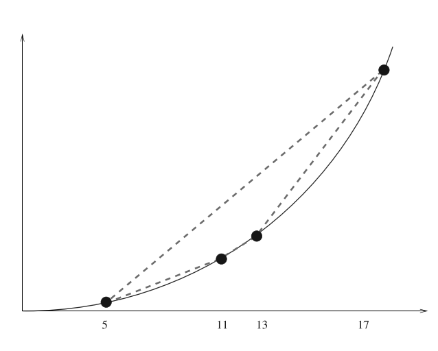
In dit voorbeeld beschikken we juist niet over een algoritme om een verzameling
We willen nu op een manier elk getal
Het aanmaken van deze punten (de transformatie dus) is
Polynomiale reductie
We kunnen dus, zoals mooi verwoordt door ikzelf in de vorige paragraaf, op basis van reductie bepaalde conclusies trekken over de complexiteit van problemen. Om in het algemeen een probleem A te reduceren naar een probleem B, passen we de volgende stappen toe:
- Vertaal de instantie van A naar een instantie van B
- Los de instantie van het probleem B op met het gekende algoritme
- Vertaal de oplossing van probleem B naar de oplossing van het probleem A.
Hieruit kunnen we twee conclusies trekken. Die zijn in de cursus mooi uitgeschreven in grote mensentaal, maar ik zal het simpel houden aangezien jullie geschatte hersencapaciteit asymptotisch begrensd is door die van een 5-jarige.
- Als je het probleem B kan oplossen met een bepaalde complexiteit, dan is de complexiteit om A op te lossen gelijk aan de complexiteit van B plus de complexiteit van de reductie.
- Als we een bewezen ondergrens hebben voor probleem A, dan is de ondergrens voor B gelijk aan de ondergrens van A min de reductie van A naar B. A is dus minstens even 'moeilijk' als B.
P en NP
De klasse P
Deze bevat alles (beslissingsproblemen) waarvoor een algoritme bestaat dat een oplossing kan berekenen in
De klasse NP
Bevat alle (beslissing)problemen waarvoor we in polynomiale tijd een oplossing kunnen verifiëren. Deze klasse bevat dus ook de klasse P, met nog extra dingen.
NP-complete problemen
(In dit deel heb ik de problemen weggelaten die niet op het leerstofoverzicht staan)
Een probleem is NP-compleet als:
- Het behoort tot NP
- Elk probleem in NP kan in polynomiale tijd worden gereduceerd naar dit probleem.
Als iemand dus één NP-compleet probleem kan oplossen in polynomiale tijd, betekent dit dat alle NP-complete problemen oplosbaar zijn in polynomiale tijd. Je kan dus bewijzen dat een probleem NP-compleet is als je kan bewijzen dat het kan omzetten in een probleem waar al van is bewezen dat het NP-compleet is.
Een bepaalde slimme gast heeft zonder reductie bewezen dat Boolean Satisfiability probleem NP-compleet is. Toen kon door middel van reductie de NP-compleetheid van een heleboel andere problemen aangetoond worden
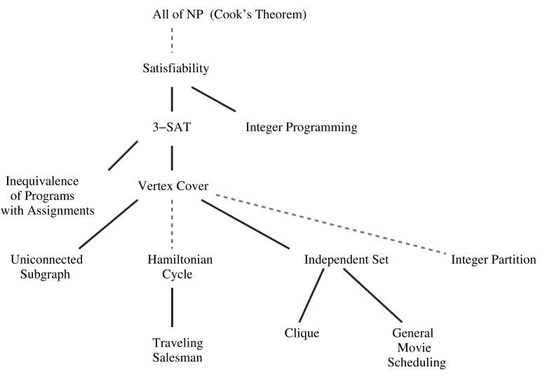
Als je niet weet wat al deze namen betekenen, is dat niet zo erg, want we gaan er lekker een stuk of 10 uitvoerig bestuderen. Zorg dat je je niet in een hoge verdieping met een raam bevindt als je de volgende paragrafen leest, want de snelle weg naar beneden zal plots heel verleidelijk lijken.
Als je wilt bewijzen dat jouw probleem NP-compleet is, moet je dus een gekend NP-compleet naar jouw probleem weten te reduceren in polynomiale tijd.
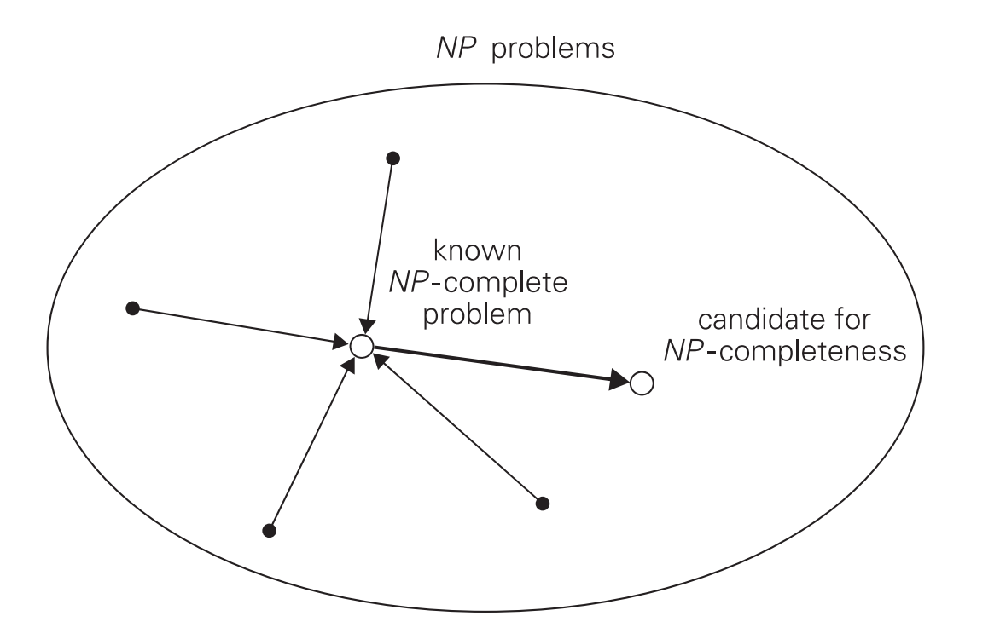
SAT
Neem:
trueoffalsebevatten.- Bijvoorbeeld:
- Elke uitspraak is dus een logische
ORtussen een aantal variabelen van
- Bijvoorbeeld:
We willen nu dus aan elke AND tussen alle uitspraken. Zoals eerder vermeld heeft een slimme meneer persoon dus bewezen dat dit probleem NP-compleet is.
3SAT
Dit is in essence hetzelfde probleem als SAT. De enige restrictie is dat elke uitspraak maar 3 variabelen mag bevatten. Ik zal dit proberen uitleggen aan de hand van een stackoverflow post aangezien ik niet heb genoteerd in de les en Pieter in de cursus zegt: "Het is gemakkelijk in te zien dat we een uitspraak met meer dan drie atomen kunnen herleiden naar een reeks uitspraken met elk drie atomen zodat de uitspraak waar is als en slechts als de 3-uitspraken waar zijn." Sorry Pieter maar ik vind dit niet gemakkelijk.
[bewijs]
Reductie
Elke uitspraak in ons SAT probleem heeft 1, 2, 3 of meer variabelen. We moeten elk van deze uitspraken omzetten in een uitspraak met 3 variabelen. We introduceren een verzameling hulpvariabelen
Drie variabelen:
- Mag je gewoon zo houden
Twee variabelen:
- zet je om naar
- Er verandert dus eigenlijk niks, maar de twee uitspraken bevatten nu wel 3 variabelen.
- zet je om naar
Eén variabele:
- zet je om naar
- zet je om naar
Meer dan drie variabelen: bv.
We volgen het principe van hierboven (ongeveer)
Knip de eerste twee elementen eraf:
En voeg aan beide stukken een hulpvariabele
Het tweede stuk is nu nog steeds te groot dus je splitst nog is:
Weeral een hulpvariabele toevoegen (
Kunnen we reduceren in polynomiale tijd?
We hebben SAT succesvol omgevormd naar 3SAT. Nu moeten we nog aantonen dat deze reductie in polynomiale tijd kan gebeuren. Neem een reeks uitspraken:
- Die
- Aangezien we om deze bepaalde reeks uitspraken om te vormen naar 3-SAT, we gewoon moeten itereren over de lijst en opsplitsen waar nodig. Is de omvorming
Is deze oplossing van 3SAT een oplossing voor SAT?
We beginnen door een willekeurige uitspraak uit ons SAT probleem te kiezen:
Omgevormd naar 3SAT wordt dit:
We nemen aan dat dit nu dus een oplossing van 3SAT is. We moeten eigenlijk bewijzen dat er tenminste 1 variabele (
Als onze hulpvariabele
trueis, dan mogenfalsezijn. (1)false, dusOftwel nemen we
false- Dan moet
- Dan moet
Nemen we
true- Dan moet
truezijn en is
- Dan moet
Voor uitspraken van andere groottes is het bewijs analoog. We hebben nu dus bewezen dat 3SAT NP-compleet is.
Problemen bij verzamelingen
Set cover
[bewijs]

We hebben een verzameling
Om aan te tonen dat Set Cover NP-compleet is, willen we aantonen dat we SAT ernaar kunnen reduceren.
Neem
Voeg voor elke
We hebben hier een voorbeeld met 4 variabelen en 3 uitspraken.
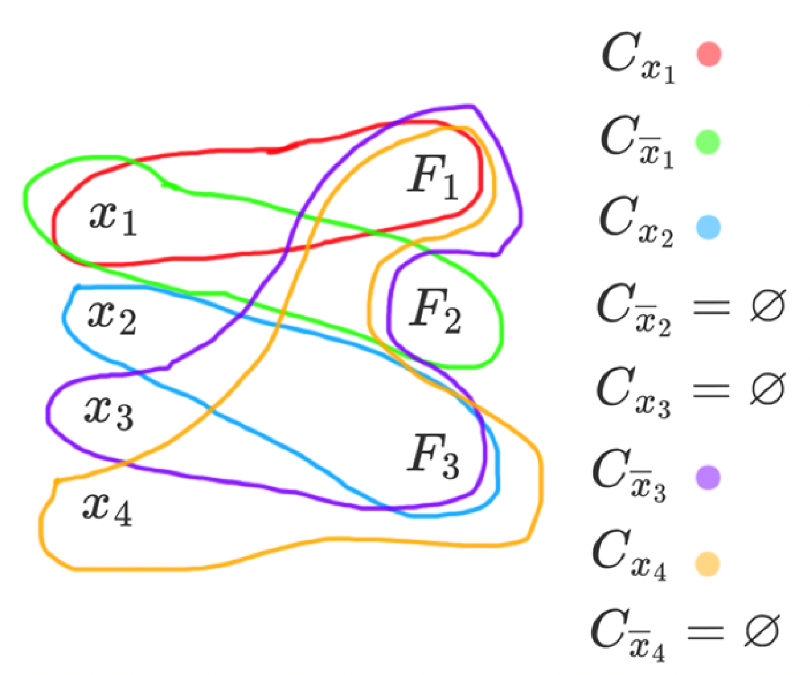
Het SAT-probleem heeft dus enkel een oplossing als er een minimum set cover is van grootte
Hitting set
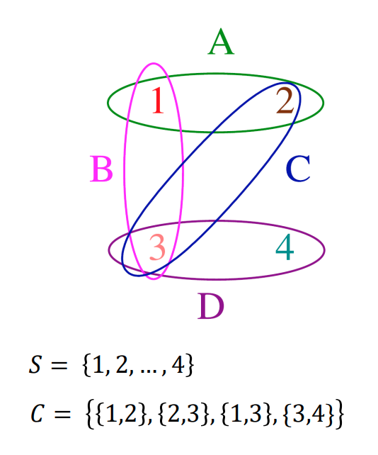
Gegeven een verzameling
We zoeken dus eigenlijk een zo klein mogelijk aantal dingen, maar we moeten van elke verzameling zeker één ding hebben. Hitting set is eigenlijk ripoff van Set Cover.
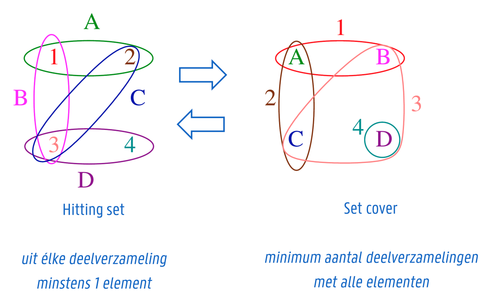
Als je voor elk element in Hitting set verwisselt met de namen van de verzamelingen waar hij inzit, krijg je Set cover.
Bijvoorbeeld (hierboven):
Set Packing
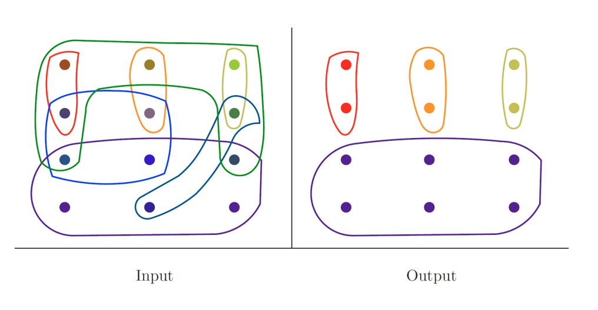
We hebben een verzameling
Subset sum
Je hebt een verzameling positieve gehele getallen en een positief geheel getal
Integer partition
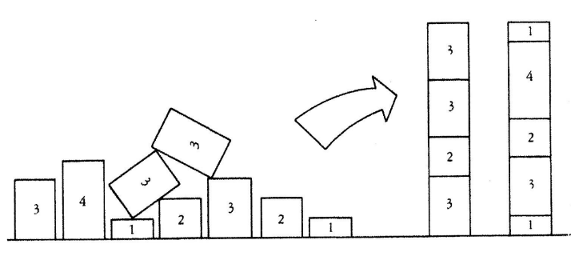
Kan je een lijst met positieve gehele getallen in twee splitsen zodat de sommen van de twee delen gelijk zijn aan elkaar.
Of anders gezegd. Kan je met een doos legoblokken van verschillende grootte twee even hoge torens bouwen. Je moet wel alle blokken gebruiken.
Reductie vanuit subset sum
Bij subset sum willen we een deelverzameling van
We voegen twee elementen toe aan de verzameling
Nu hebben we de lijst
De som van de elementen van
Als we nu integer partition op deze nieuwe lijst doen krijgen we als resultaat 2 sublijsten:
- Eén lijst zal
- De andere zal
- Het is niet mogelijk dat één lijst ze allebei bevat, want dan zou de som van zijn elementen minstens gelijk zijn aan
Zullen we nu even voor de gemakkelijkheid zeggen dat
- Dit betekent dat als we
Gegevensopslag
Bin packing
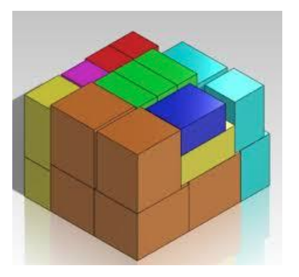
We hebben een verzameling van goederen met elk een bepaalde afmeting. Daarnaast hebben we een verzameling van dozen met een bepaalde capaciteit. Kunnen we alle goederen opslaan in zo weinig mogelijk bakken?
Je kan een oplossing van dit probleem benaderen met een gulzig algoritme: first fit decreasing. We sorteren alle goederen van groot naar klein. Dan beginnen we de het grootste. Past deze in de eerste doos, zetten we die erin. Dan nemen we de tweede grootste. Past deze niet in de eerste doos, zetten we hem in de tweede. Je gaat dus voor de lijst van goederen op aflopende grootte de volgende in de eerste bak steken waar nog plaats is.
Knapsack
We hebben een verzameling van spullen, elk met een gewicht en een waarde. We hebben een rugzak waar een bepaald aantal kilogram in kan. Hoe kunnen we nu onze rugzak vullen zodat hij zo veel mogelijk waarde bevat.
Graafproblemen
Vertex cover
Je hebt een ongerichte graaf. Bestaat er een zo klein mogelijke groep knopen die één eindknoop van elke verbinding bevat? Ik vind dit niet goed uitgelegd. We zullen het eens anders verwoorden. Beschouw dit plaatje:

De bedoeling van vertex cover is dat je een zo klein mogelijke groep bolletjes vindt zodat elk ander bolletje met ten minste één van die bolletjes verbonden is. Ziezo, nu is het ineens wel duidelijk.
Reductie vanuit 3SAT
We nemen weer ons 3SAT probleem:
Om dit probleem om te zetten zodat we het kunnen oplossen met vertex cover moeten we enkele dingen doen:
Maak voor elk element van
Maak voor elk element van
- Verbind die drie met elkaar
- En elk van die drie met zijn bijhorende knoop van de vorige stap
Ik zal het even verduidelijken met een voorbeeld (gepikt van Pieter natuurlijk)
Dit zal er dan zo uitzien:
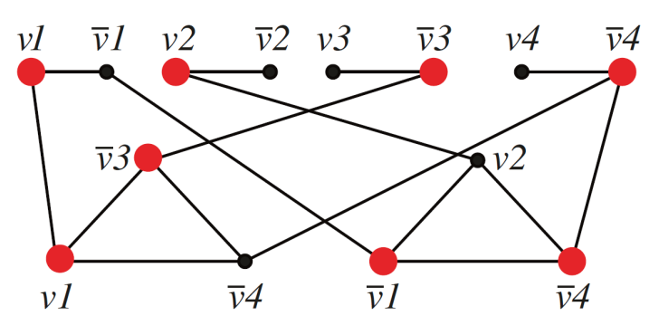
In de afbeelding is het vertex cover probleem ook al opgelost. De rode bolletjes zijn samen verbonden met elk stokje. Je kan in de bovenste rij zien dat
Hebben we op basis van een (veronderstelde) oplossing van 3SAT altijd een oplossing voor vertex cover?
We hebben een oplossing voor 3SAT. Dus we hebben onze
Voor elke variabele voegen we een knoop toe aan de vertex cover
trueisfalseis- De waarde van die variabele is dus altijd
true
Voor elk van je uitspraken in
true.- Voeg de andere twee toe
Nu moeten we aantonen dat dit ook een oplossing is voor het vertex cover. Bezichtig de volgende prent:
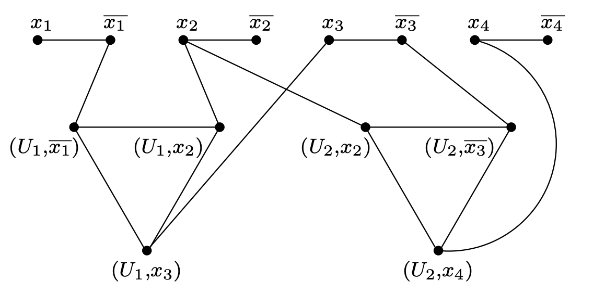
Van de rij bovenaan hebben we sowieso ééntje van elk paar gekozen (diegene die true was). En in de driehoeken hebben we altijd 2 knopen gekozen. We hebben één knoop overgelaten. Deze was true. Dit betekent dus dat het knoopje in de driehoek dat we niet gekozen hebben. Deze is dus waar, en is dus sowieso verbonden met een
Hebben we op basis van een (veronderstelde) oplossing van vertex cover altijd een oplossing voor 3SAT?
Je moet nu eigenlijk exact het omgekeerde doen van hierboven. Je begint door een vertex cover te maken. deze bevat sowieso ééntje van elk van de paren in de bovenste rij. En de twee knopen in de driehoek die niet verbonden zijn met één van de knopen die je vanboven hebt gekozen. Dit is een oplossing voor 3SAT.
Clique
Vind de grootste groep knopen die allemaal met elkaar verbonden zijn. Oftewel, vind de grootste vriendengroep.
Graph coloring
Hier heb je twee varianten: Vertex coloring en edge coloring.
Bij vertex coloring kleur je de knopen in een graaf met zo weinig mogelijk kleuren zodat twee knopen van de zelfde kleur nooit verbonden zijn.
Edge coloring is het omgekeerde. Je kleurt de verbindingen en je moet ervoor zorgen dat elke knoop nooit twee verbindingen van dezelfde kleur heeft.
Independent set
Zoek de grootste groep knopen die niet met elkaar verbonden zijn. Of zoek in een groep mensen een zo groot mogelijke groep waarin niemand elkaar kent.
Travelling salesman
Dit kennen jullie hopelijk al. Anders mag je gaan huilen want je bent sowieso gekloot dan.
Examen
Het leek me nog wel nuttig om de vragen vanuit de wooclaps te verzamelen.
De fysiek verwijderde knoop uit een geldige rood-zwarte boom kan zijn:
- Een rode knoop met 2 virtuele kindknopen
- Een rode knoop met 1 echt zwart kind, en 1 virtueel kind
- Een zwarte knoop met 2 virtuele kindknopen
- Een zwarte knoop met 1 echt rood kind en 1 virtueel kind
- Een zwarte knoop met 1 echt zwart kind en 1 virtueel kind
Als ik de zijde van mijn raster vergroot, krijg ik voor dezelfde gegevens (rasterstructuur):
- Minder en kortere gelinkte lijsten
- Meer en kortere gelinkte lijsten
- Minder en langere gelinkte lijsten
- Meer en langere gelinkte lijsten
Welke uitspraken zijn waar voor een Point Quadtree?
- het aantal knopen neemt toe volgens
- het aantal knopen neemt toe volgens
- Zoeken en toevoegen zijn
- Zoeken en toevoegen zijn O (log n) in het slechtste geval
De hoogte van een Point Reqion Quad Tree hangt rechtstreeks af van (meerdere opties mogelijk):
- De invoervolgorde van de gegevens
- De grootte van de zoekruimte
- De kortste afstand van elk mogelijk paar punten
De invoervolgorde heeft effect op de structuur van een k-d tree
- Waar
- Vals
De invoervolgorde heeft effect op de structuur van een k-d tree
- Waar
- Vals
Na
Hoeveel neemt de uitvoeringstijd toe wanneer de invoergrootte verdubbelt bij een algoritme met uitvoeringstijd
- +1 en x2
- +1 en x4
- x2 en x2
- x2 en x4
Rangschik onderstaande functies in oplopende volgorde van orde van toename
Rangschik onderstaande functies in oplopende volgorde van orde van toename
Is
- Waar
- Vals
Is
- Waar
- Vals
Welke van onderstaande betrekkingen zijn juist over
Welke operaties neem je op in je kostenmodel?
xxxxxxxxxxvoid selection_sort(vector<T> &v){ int n = v.size() for (int i=0; i<n-1; i++){ int imin = i; for (int j=i+1; j<n; j++){ if (v[j] < v[imin]) imin = j; } swap(v[i],v[imin]); }}- Initialiseren van de positie van het minimum
- Sleutelvergelijking
- Aanpassen van de positie van ... (niet leesbaar op de wooclap)
- Swap operatie
Selection sort rangschikt:
xxxxxxxxxxvoid selection_sort(vector<T> &v){ int n = v.size() for (int i=0; i<n-1; i++){ int imin = i; for (int j=i+1; j<n; j++){ if (v[j] < v[imin]) imin = j; } swap(v[i],v[imin]); }}- Ter plaatse en stabiel
- Ter plaatse maar niet stabiel
- Niet ter plaatse en stabiel
- Niet ter plaatse en niet stabiel
Insertion sort rangschikt
- Ter plaatse en stabiel
- Ter plaatse maar niet stabiel
- Niet ter plaatse maar stabiel
- Niet ter plaatse en niet stabiel
Het beste/slechtste geval voor insertion sort treedt op bij:
- reeds oplopend/aflopend gesorteerde invoer
- reeds aflopend/oplopend gesorteerde invoer
- reeds oplopend/oplopend gesorteerde invoer
- reeds aflopend/aflopend gesorteerde invoer
We starten met n elementen. Wat is de maximale grootte van de deeltabel waarop de recursieve oproep gebeurt?
Flipping pancakes
Je hebt een stapel van n pannenkoeken, elk van verschillende grootte. Je kan een spatel onder een willekeurige pannenkoek steken, en zo alle pannenkoeken boven de stapel omkeren. Ontwerp een algoritme om met je spatel de pannenkoeken te sorteren volgens grootte, met de grootste pannenkoek op de bodem.
Welk geval van het master theorema is van toepassing bij mergesort?
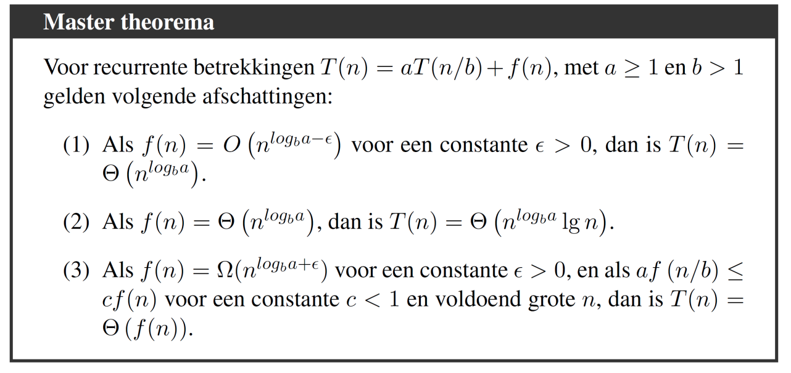
- Geval 1
- Geval 2
- Geval 3
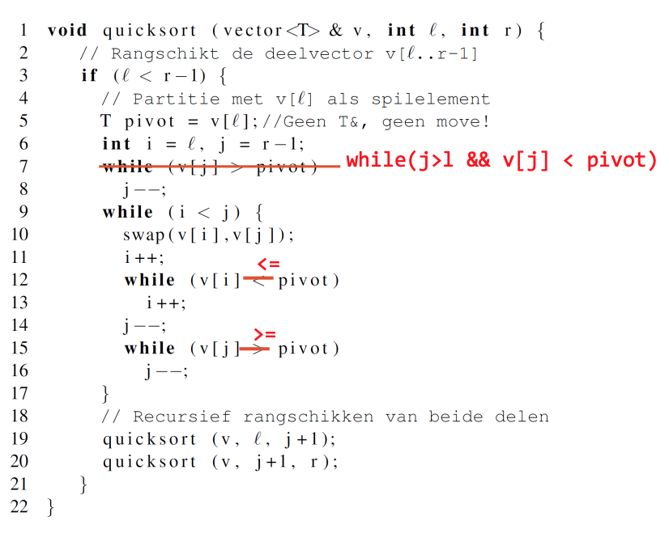
Wat zou er gebeuren bij een rij met
- De partities zijn resp
- De partities zijn resp
- De partities zijn beide ongeveer even groot
Welke factor(en) bepalen de diepte van de recursieboom bij MSD radix sort
- De volgorde van de invoer
- de radix
- Het aantal sleutels
- Het totaal aantal cijfers van alle sleutels samen
- Aantal cijfers in de grootste sleutel
------------ Labo's ------------
Hier wat dingen die ik bijgeleerd heb of anders heb gedaan.
Red black trees
De oplossingen staan online, maar ik wou hier toch even iets kleins toevoegen. De contains() wordt in de oplossing recursief opgelost, maar het kan ook iteratief.
xxxxxxxxxxbool RedBlackTree::contains(int key){ // Kan blijkbaar ook recursief if (root == NULL) { return false; } else { Node* current = root.get(); while (true) { if (current->key == key) { return true; } else if (current->key < key) { if (current->rightChild) { current = current->rightChild.get(); } else { return false; } } else { if (current->leftChild) { current = current->leftChild.get(); } else { return false; } } } }}Ik had de getHeight() ook een beetje anders gedaan (een beetje slechter denk ik). Misschien heb je er iets aan.
xint RedBlackTree::getHeight(){ return getHeight(root.get());}int RedBlackTree::getHeight(Node* node){ if (node == NULL) { return 0; } int left = 0; int right = 0; if (node->leftChild) { left = getHeight(node->leftChild.get()) + 1; } if (node->rightChild) { right = getHeight(node->rightChild.get()) + 1; }
return left > right ? left : right;}
Decrease and conquer
Redelijk straightforward, maar ik heb wel één leuk fenomeen ondervonden:
De eerste manier runde echt zeker 10 keer trager dan de tweede.
xxxxxxxxxxfor (auto& testPoint : testData) {
// TODO calculate error for this testpoint ! double error; updateDistance(testPoint, trainingData); location estimate = kNN_location(trainingData, 10); error = euclideanDistance(testPoint, estimate);
errors[nrTestPoint++] = error;
std::cout << nrTestPoint << ". Error: " << error << " m" << std::endl; }xxxxxxxxxxfor (auto& testPoint : testData) {
// TODO calculate error for this testpoint ! double error; updateDistance(testPoint, trainingData); std::shuffle(trainingData.begin(), trainingData.end(), rng); location estimate = kNN_location(trainingData, 10); error = euclideanDistance(testPoint, estimate);
errors[nrTestPoint++] = error;
std::cout << nrTestPoint << ". Error: " << error << " m" << std::endl; }Hoe zou dat komen? 😉
Divide and conquer
Ik heb het een klein beetje anders gedaan dan in de oplossing, moest iemand geïnteresseerd zijn.
xxxxxxxxxxtemplate <class T>T sortedVectorMedian(std::vector<T>& v){ std::sort(v.begin(), v.end(), [](T a, T b) -> bool { return a < b; }); if (v.size() % 2 == 0) { return (v[v.size() / 2 - 1] + v[v.size() / 2]) / 2; } else return v[v.size() / 2];}
template <class T>T sortedVectorMedianOffset(std::vector<T>& v, int offset, int n){ if (n % 2 == 0) { return (v[n / 2 - 1 + offset] + v[n / 2 + offset]) / 2; } else return v[n / 2 + offset];}
template <class T>T M3(T a, T b, T c){ return a < b ? (a < c ? (b < c ? b : c) : (a < b ? a : b)) : (b < c ? (a < c ? a : c) : (a < b ? a : b));}template <class T>T M4(T a, T b, T c, T d){ T max = std::max(std::max(a, b), std::max(c, d)); T min = std::min(std::min(a, b), std::min(c, d));
return (a + b + c + d - max - min) / 2.0f;}
template <class T>void printVector(std::vector<T>& v, int offset, int n){ std::cerr << "["; for (int i = 0; i < n; i++) { std::cerr << v[i + offset] << ", "; }
std::cerr << "]\n";}
template <class T>T getMedian(std::vector<T>& branchA, int a_offset, int a_n, std::vector<T>& branchB, int b_offset, int b_n){ T median_a = sortedVectorMedianOffset<T>(branchA, a_offset, a_n); T median_b = sortedVectorMedianOffset<T>(branchB, b_offset, b_n); if (median_a == median_b) { return median_a; } if (a_n == 0) { return median_b; } if (a_n == 1) { T a = branchA[a_offset]; T b0 = branchB[b_offset + b_n / 2 - 1]; T b1 = branchB[b_offset + b_n / 2]; T b2 = branchB[b_offset + b_n / 2 + 1]; if (b_n % 2 == 0) {
return M3(a, b0, b1); } else { return M4(a, b0, b1, b2); } } if (a_n == 2) { T a1 = branchA[a_offset]; T a2 = branchA[a_offset + 1]; T b0 = branchB[b_offset + b_n / 2 - 2]; T b1 = branchB[b_offset + b_n / 2 - 1]; T b2 = branchB[b_offset + b_n / 2]; T b3 = branchB[b_offset + b_n / 2 + 1]; if (b_n % 2 == 0) { if (a2 < b0) { return (b0 + b1) / 2; } if (a1 > b3) { return (b2 + b3) / 2; } else { return M4(a1, a2, b1, b2); } } else { return M3(a1, a2, b2); } } else {
if (median_a < median_b) { return getMedian(branchA, a_offset + a_n / 2, a_n - (a_n / 2), branchB, b_offset, b_n - (a_n / 2)); } else { return getMedian(branchA, a_offset, a_n - (a_n / 2), branchB, b_offset + (a_n / 2), b_n - (a_n / 2)); } }}
template <class T>T getMedian(std::vector<T>& branchA, std::vector<T>& branchB){ if (branchA.size() < branchB.size()) { return getMedian(branchA, 0, branchA.size(), branchB, 0, branchB.size()); } else { return getMedian(branchB, 0, branchB.size(), branchA, 0, branchA.size()); }}
Ik heb de testklasse ook wat uitgebreid, want die van de lectoren was wel echt matig. Die van mij maakt twee random arrays, met elke keer andere waarden, dus dan kan je deftig je code testen. Ik zou ook de lengtes van de vectoren aanpassen wanneer je je code test.
xxxxxxxxxxTEST_CASE("Final median wage test", "[MedianWage]"){ srand(time(NULL));
std::vector<float> branchAf = { 3, 7, 8, 9, 12, 30, 40, 65 }; std::vector<float> branchBf = { 5, 8, 10, 20, 32, 64 };
float median = getMedian<float>(branchAf, branchBf);
// Generate 10 random numbers by lambda func and fill it in vector std::vector<float> vec_a(23); std::generate(vec_a.begin(), vec_a.end(), []() { return rand() % 100; }); std::sort(vec_a.begin(), vec_a.end());
std::vector<float> vec_b(22); std::generate(vec_b.begin(), vec_b.end(), []() { return rand() % 100; }); std::sort(vec_b.begin(), vec_b.end());
float median2 = getMedian<float>(vec_a, vec_b); vec_a.insert(vec_a.end(), vec_b.begin(), vec_b.end()); std::sort(vec_a.begin(), vec_a.end()); float computed_median = sortedVectorMedian(vec_a);
REQUIRE(median == 11.0f); REQUIRE(median2 == computed_median);}
Linear Sorting
Smallest window
Je moest hier de kleinste range in een lijst vinden, zodat als je die range sorteert, de hele lijst is gesorteerd. De boys van algoritmen hebben het toch wel wat beter aangepakt dan ik.
Mijn oplossing:
xxxxxxxxxxstd::pair<int, int> SmallestWindow::run(std::vector<int> numbers){ std::cout << "sorting vector of size: " << numbers.size() << std::endl;
int left = 0; int right = numbers.size() - 1;
// Ik verzet de linkse wijzer naar rechts zolang de elementen stijgend zijn while (left < numbers.size() - 1 && numbers[left] < numbers[left + 1]) { left++; }
// Ik verzet de rechtse wijzer naar links zolang de elementen dalend zijn while (right > left && numbers[right] > numbers[right - 1]) { right--; } // Als ze elkaar tegenkomen is de rij gesorteerd if (right == left) return std::pair(0, 0);
// Nu neem ik de linkse wijzer en verzet deze naar links zolang er een element aan zijn rechterkant zit // dat kleiner is int left_offset = 0; while (left + left_offset < right) { if (numbers[left + left_offset] < numbers[left]) { left--; } else { left_offset++; } }
// Idem, maar andersom met de rechtse int right_offset = 0; while (right + right_offset > left) { if (numbers[right + right_offset] > numbers[right]) { right++; } else { right_offset--; } } std::cout << "left: " << left << " right: " << right << std::endl; return std::pair(left + 1, right - 1);}Deze oplossing is zo veel eleganter
xxxxxxxxxxstd::pair<int, int> SmallestWindow::run(std::vector<int> numbers) { int max = *std::min_element(numbers.begin(), numbers.end()); int min = *std::max_element(numbers.begin(), numbers.end()); int j = numbers.size() - 1; int i = 0;
// loop over input from left to right // keep track of max value and j which is the highest index for which // numbers[n] <= max // Ze gaan van links naar rechts en houden het maximum van alle overlopen nummers bij // Zolang het volgende element niet groter is dan het maximum, zetten ze j naar rechts // dus eigenlijk zolang je een element tegenkomt dat niet op zijn plaats staat // alle elementen rechts van j zijn dan op het einde de elementen die goed staan for (int n = i; n < numbers.size(); n++) { if (numbers[n] > max) { max = numbers[n]; } else { j = n; } }
// loop over input from right to left starting at j // keep track of min value and i which is the smallest index for which // numbers[n] >= min for (int n = j; n >= 0; n--) { if (numbers[n] < min) { min = numbers[n]; } else { i = n; } }
return std::pair<int, int>(i, j);}
Seam Carving
Bij de get_energy methode heb ik te veel werk in de methode zelf gedaan. Ik had beter een abstractie gemaakt door in de functie te loopen over de rijen en de kolommen, en dan een andere functie zich bezig te laten houden met de pixels.
Dynamic Programming
Darts
Ik weet niet wat ik heb gedaan, maar ik heb een timer opgezet en mijn oplossing is 10 keer sneller dan die van de boys.
xxxxxxxxxxvoid gen_throws(std::vector<int>& arr){ for (int mul = 1; mul <= 3; mul++) { for (int hit = 1; hit <= 20; hit++) { int score = hit * mul; arr.push_back(score); } } arr.push_back(25); arr.push_back(50);}
std::pair<int, int> number_of_darts(int remaining_score){ std::vector<int> pos(remaining_score, 0); std::vector<int> darts(remaining_score, INT_MAX); std::vector<int> throws; gen_throws(throws);
for (int j = 2; j <= 40 && j <= remaining_score; j += 2) { darts[remaining_score - j] = 1; pos[remaining_score - j] = 1; } if (remaining_score > 50) { darts[remaining_score - 50] = 1; pos[remaining_score - 50] = 1; }
for (int i = remaining_score - 2; i >= 0; i--) {
int min = INT_MAX; bool found = false; for (int score : throws) { if (i + score < remaining_score && darts[i + score] < min) { min = darts[i + score]; } if (i + score > remaining_score) break; } if (min <= darts[i] && min + 1 < darts[i]) { darts[i] = 1 + min; }
for (int score : throws) { if (i + score < remaining_score && darts[i + score] + 1 == darts[i]) { pos[i] += pos[i + score]; } if (i + score > remaining_score) break; } } // std::cout << "Possibilities: " << std::endl; // printV(pos); // std::cout << std::endl; // std::cout << "darts: " << std::endl; // printV(darts); return { darts[0], pos[0] };}
Nuttige dingen voor de tests
nth-element
std::nth_element sorteer je lijst gedeeltelijk zodat het n-de element zeker op de juiste plaats staat. Alle elementen die voor het n-de element staan zullen kleiner zijn en alle elementen erna groter.
xxxxxxxxxxauto m = v.begin() + v.size()/2; std::nth_element(v.begin(), m, v.end()); // je moet dus 3 iterators meegeven (begin, n-de element, einde)
// je kan als vierde element ook een (lambda) functie meegeven std::nth_element(colors.begin(), half, colors.end(), [&dim](Color a, Color b) { return a.compareDim(a, dim, b); });
// want in dit labo kon je niet zomaar kleuren vergelijken met de "<" operator.
minmax_element
std::minmax_element geeft een paar van iterators terug, de eerste wijst naar het kleinste, en de tweede naar het grootste element in de range.
xxxxxxxxxxconst auto v = { 3, 9, 1, 4, 2, 5, 9 };const auto [min, max] = std::minmax_element(begin(v), end(v));
transform
std::transform past een functie toe op elk element van een range (niet gegarandeerd in volgorde geloof ik)
xxxxxxxxxx// we maken alle letters uppercasestd::string s("hello");std::transform(s.begin(), s.end(), s.begin(), [](unsigned char c) -> unsigned char { return std::toupper(c); });
// We steken alle keys van een map in een vectormap<int, string> m = { {1,"foo"}, {42, "bar"}, {7, "baz"} };vector<int> keys;std::transform(m.begin(), m.end(), std::back_inserter(keys), getFirst);// back_inserter is een output iterator die ook een push_back doet in de array die je eraan meegeeft
accumulate
je kan std::accumulate gebruiken om bijvoorbeeld het gemiddelde van een vector te berekenen
xxxxxxxxxxdouble avg1(std::vector<int> const& v) { return 1.0 * std::accumulate(v.begin(), v.end(), 0LL) / v.size();}// deze is wel voor als je met hele grote getallen werkt, het kan ook simpeler
vector splitsen
Je kan de constructor van een vector twee iterators meegeven (begin, einde). De elementen van begin tot einde worden dan naar de nieuwe vector gekopieerd. Dit kan van pas komen als je recursief een boom moet opbouwen.
xxxxxxxxxxstd::vector<int> lines;// fillstd::size_t const half_size = lines.size() / 2;std::vector<int> links(lines.begin(), lines.begin() + half_size);std::vector<int> rechts(lines.begin() + half_size, lines.end());
swap
Om twee elementen te wisselen.
xxxxxxxxxxstd::swap(v[0],v[1]);
vectoren samenvoegen
xxxxxxxxxxvector1.insert( vector1.end(), vector2.begin(), vector2.end() );
Extra
Mijn eigen versies van een aantal algoritmen.
Longest common substring
Deze is van een labo van vorig jaar. Om de één of andere reden is mijn oplossing weer sneller dan die van de boys
xxxxxxxxxxint lcs(string& A, string& B, const int m, const int n){ std::vector<std::vector<int>> tab(m + 1, std::vector<int>(n + 1, 0)); for (int i = 0; i <= m; i++) { for (int j = 0; j <= n; j++) { if (i == 0 || j == 0) { tab[i][j] = 0; } else if (A[i] == B[j]) { tab[i][j] = std::min(tab[i - 1][j - 1], std::min(tab[i][j - 1], tab[i - 1][j])) + 1; } else if (A[i] != B[j]) { tab[i][j] = std::max(tab[i - 1][j - 1], std::max(tab[i][j - 1], tab[i - 1][j])); } } }
return tab[m][n];}Selection sort
xxxxxxxxxx
void SelectionSort::sort(std::vector<int>& v) const{ int index = 0; while (index < v.size()) { int min = std::distance(std::begin(v), std::min_element(std::begin(v) + index, std::end(v))); std::swap(v[index], v[min]); index++; }}Insertion sort
xxxxxxxxxxvoid InsertionSort::sort(std::vector<int>& v) const{ int index = 1;
while (index < v.size()) { int i = index; while (i > 0 && v[index] < v[i - 1]) { i--; } int num = v[index]; v.erase(v.begin() + index); v.insert(v.begin() + i, num);
index++; }}
Shellsort
xxxxxxxxxxvoid ShellSort::sort(std::vector<int>& v) const{ std::vector<int> seq = { 701, 301, 132, 57, 23, 10, 4, 1 }; for (int i : seq) { n_sort(v, i); }}
void ShellSort::n_sort(std::vector<int>& v, int n) const{ for (int offset = 0; offset < n; offset++) { for (int i = n; i < v.size(); i += n) { int j = i; int temp = v[i]; while (j > 0 && temp < v[j - n]) { v[j] = v[j - n]; j -= n; } v[j] = temp; } }}